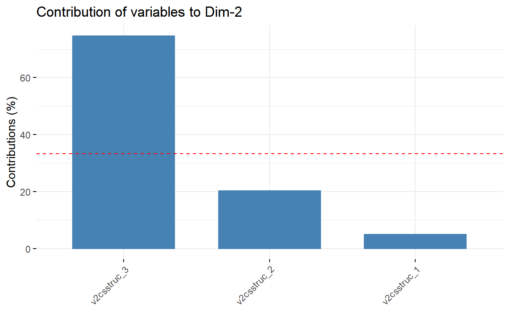

INTRODUCCIÓN
El presente documento es una exposición de un proyecto de investigación desplegado a lo largo del semestre y que aplica distintas técnicas estadísticas para el estudio de los modelos de democracia. El desarrollo profundo y los obstáculos que enfrenté en su elaboración se encuentran detallados en las Entregas N°1 a N°9 de mi blog en GitHub. Me limito aquí a presentar una versión estilizada con pequeños ajustes.
La pregunta de investigación que guió la investigación fue si las democracias mayoritarias tendían a vulnerar derechos individuales en mayor medida que las democracias consensuales. Se desprenden de esta pregunta principal una serie de cuestiones relevantes ¿Las instituciones consensuales tienen más chances de generar democracias de alta calidad? ¿Las democracias mayoritarias tienden a un plazo de vida más corto antes de sufrir erosión democrática? En lo siguiente intento hacerme cargo de todas estas dudas.
La idea de estudiar los modelos de democracia y sus efectos viene de los diferentes componentes normativos que componen lo que hoy conocemos como democracias representativas. En teoría política, se detectan contribuciones importantes del liberalismo y el republicanismo, pero también de la soberanía popular (Held, 1987). No siempre es fácil conciliar las implicaciones de tales diversas fuentes. Considérese la doctrina de soberanía popular y su relación con los derechos de los individuos. Para la teoría liberal clásica, siempre habrá una desconfianza por la coerción que una mayoría puede ejercer sobre una minoría. La función del poder político es la seguridad del ser humano respecto a otros, pero también respecto al propio Estado (Shklar, 2018). Estas aprehensiones son profundizadas por la tradición federalista y la necesidad de idear un diseño institucional de frenos y contrapesos que modere el ejercicio del poder político al fragmentarlo en diferentes intereses que deban dialogar entre sí para ejercer un curso de acción política (Hamilton, Madison & Jay, 2009).
El principio democrático en torno al cuál un Estado organiza sus instituciones da lugar a distintas organizaciones políticas. Arend Lijphart (1999) parte de este hecho para distinguir entre modelos de democracia mayoritarios y modelos consensuales. El modelo mayoritario organiza las instituciones y el proceso de toma de decisiones para fomentar la fluidez del sistema político y la respuesta directa al principio de mayoría. Por otra parte, el modelo consensual hace énfasis en la necesidad de ir más allá de la mayoría numérica y reunir el mayor consenso posible para la toma de una decisión. Este tipo de sistemas dispersan el poder y hacen necesarios grandes acuerdos para la toma de decisiones. De acuerdo a la teoría liberal-republicana del gobierno democrático, un modelo mayoritario será más proclive a la tiranía de la mayoría y la vulneración de derechos individuales. En cambio, un modelo consensual debería moderar estas tendencias. En base a esto se desarrolla la siguiente hipótesis guía:
Hipótesis Principal
H0: Las democracias mayoritarias tienden a vulnerar los derechos individuales en mayor medida que las democracias consensuales.
H1: Las democracias mayoritarias no tienden a vulnerar los derechos individuales en mayor medida que las democracias consensuales.
Hipótesis Secundarias
H2: Las democracias consensuales tienen más posibilidades de originar democracias liberales que las democracias mayoritarias
H3: Las democracias consensuales no tienen más posibilidades de originar democracias liberales las democracias mayoritarias.
H4: Las democracias mayoritarias tienden a experimentar erosión democrática más rápido que las democracias consensuales.
H5: Las democracias mayoritarias no tienden a experimentar erosión democrática más rápido que las democracias consensuales.
MODELOS DE DEMOCRACIA
Arend Lijphart (1999) plantea la existencia de modelos de democracia mayoritario y consensual. Ambos son dos extremos de un contínuo, un sistema político puede ser mayoritario en algunas dimensiones y consensual en otros aunque la distinción parezca dicotómica en un principio. Al momento de clasificar un Estado en alguna de estas clases, considera relevantes dos dimensiones. La primera es llamada dimensión Ejecutivo-Partidos y la segunda Federal-Unitaria. Ambas están marcadas por las siguientes diferencias:
Dimensión Ejecutivo-Partidos
| Modelo Mayoritario | Modelo Consensual |
|---|---|
| Gabinetes de partido único | Gabinete de coalición multipartidista |
| Dominio del Poder Ejecutivo | Equilibrio Poder Ejecutivo-Legislativo |
| Bipartidismo | Multipartidismo |
| Sistema Electoral Mayoritario | Sistema Electoral Representación Proporcional |
| Grupos Interés Mayoría Relativa | Grupos de Interés Coorporativistas |
Dimensión Federal-Unitaria
| Modelo Mayoritario | Modelo Consensual |
|---|---|
| Gobierno Unitario | Gobierno Federal |
| Unicameralismo | Bicameralismo |
| Constituciones flexibles | Constituciones rígidas |
| Supremacía Constitucional Legislativo | Revisión Constitucional Judicial |
| Banco Central Dependiente | Banco Central Independiente |
BASE DE DATOS
El punto de partida natural para un estudio de estas características sería la base de datos de Lijphart (1999) en el estudio de sus 36 modelos de democracia. Sin embargo, los datos del autor no se desglosan en unidades país-año. Por otro lado, cubren sólo un pequeño número de democracias y no son extendibles hasta 2021 porque su registro cesa en 1996. Esto nos lleva a la búsqueda de alternativas más detalladas y actuales. El proyecto Varieties of Democracy -a partir de ahora V-DEM- ofrece una serie de datos de gran valor para nuestor análisis pues en sus inicios fue pensada como una extensión del estudio de Lijphart (1999) (Coppedge et al., 2022). Las variables v2x_divparctrl y v2x_feduni representan, respectivamente, la dimensión Ejecutivo-Partidos y Federal-Unitaria del trabajo de Lijphart (1999). Consideraremos los datos desde 1990 en adelante, puesto que marca el epicentro de la tercera ola de democracia (Huntington, 1991).
El resto de variables que usaremos desde V-DEM (Coppedge et al., 2022) y Garriga (2016) son:
| Variables | Descripción |
|---|---|
| country_name | Nombre del país |
| cowcode | ID del país en COW |
| year | Año |
| v2x_polyarchy | Índice democracia electoral V-Dem |
| v2lgbicam | Número de cámaras de la Legislatura V-Dem |
| v2jureview | Fortaleza del órgano de revisión judicial V-Dem |
| v2csstruc_0 | Si se permiten CSO o no |
| v2csstruc_1 | Si estructura CSO es corporativista o no V-Dem |
| v2csstruc_2 | Si existen CS0 que dominen la estructura o no V-Dem |
| v2csstruc_3 | Si estructura CS0 es pluralista o no V-Dem |
| v2x_feduni | Índice de independencia de gobiernos locales V-Dem |
| v2x_divparctrl | Índice de dispersión del control partidario V-Dem |
| lvaw_garriga | Índice independencia Banco Central Garriga |
| e_gdppc | Estandarización PIB per cápita V-Dem |
| v2xcl_rol | Índice igualdad ante la ley y libertad individual V-Dem |
Proceso para generar Base de Datos
Llamaremos a la base de datos que contiene todas las variables que serán el pilar de nuestro trabajo como df_0.
library(tidyverse)
vdem <- read.csv("v-dem.csv")
vdem <- vdem %>%
select(country_name,
COWcode,
year,
v2x_polyarchy,
v2x_libdem,
v2x_feduni,
v2x_divparctrl,
v2jureview,
v2lgbicam,
v2xcl_rol,
v2csstruc_0,
v2csstruc_1,
v2csstruc_2,
v2csstruc_3,
e_gdppc) %>%
filter(year >= 1990)
vdem <- vdem %>%
rename(cowcode = COWcode)
load("CBI dataset Garriga.RData")
x <- x %>%
select(cname, cowcode, year, lvaw_garriga) %>%
filter(year >= 1990)
codes <- vdem$cowcode
x<- x %>% filter(cowcode %in% codes)
df_0 <- left_join(vdem, x,
by = c("cowcode", "year"))
df_0 <- df_0 %>%
select(-cname)
rm(vdem, x, codes)
write.csv(df_0, "df_0.csv", row.names = F)Modificar Variable: Bicameralismo
La variable v2lgbicam registra valores 0 para aquellas unidades país-año donde no se observa legislatura, 1 cuando la legislatura se compone de una cámara y 2 cuando es bicameral. Me interesa convertir esta variable en una dummy para bicameralismo llamada d_bicam. Esta última tomará valor 0 cuando un sistema es unicameral y 1 cuando es bicameral. Los años donde un país no registre legislatura serán codificados con valores NA.
Crear Índice de Estructura de Organizaciones de la Sociedad Civil (CSO) a partir de Análisis de Componentes Principales
Existe un conjunto de variables que merece nuestra atención especial en el dataframe:
| Variables | Descripción |
|---|---|
| v2csstruc_0 | Si se permiten CSO o no |
| v2csstruc_1 | Si estructura CSO es corporativista o no V-Dem |
| v2csstruc_2 | Si existen CS0 que dominen la estructura o no V-Dem |
| v2csstruc_3 | Si estructura CS0 es pluralista o no V-Dem |
Estas cuatro variables miden si la estructura de organizaciones de la sociedad civil no está permitida, está permitida pero existen grandes organizaciones dominantes vinculadas al gobierno por lazos corporativistas, no existen organizaciones dominantes sino que toman protagonismo por su contingencia y sólo existen muchas organizaciones pequeñas que compiten entre sí por la atención de los policymakers (Coppedge et al., 2022). En lo posible nos gustaría reducir las cuatro variables a un sólo índice.
Las respuestas de cada variable se obtuvieron a partir de una encuesta en terreno. Las preguntas son dicotómicas (Ejemplo: ¿El gobierno permite la existencia de CSO autónomas? 0 = No, 1 = Sí). Esta variable puede separar democracias de dictaduras, pero no nos dice mucho sobre la estructura de las organizaciones de la sociedad civil. En cambio, v2csstruc_1, v2csstruc_2 y v2csstruc_3 representan un contínuo mayoritarista-consensual. Procederemos a agregarlas escalando sus valores en 1.
Una opción es sencillamente calcular un índice a partir de las medias de las variables en cuestión, pero podemos tener un mejor ajuste empleando el método de análisis de componentes principales sobre estas variables. Comenzaremos explorando su relación con un gráfico tridimensional y una matriz de correlación:
library(scatterplot3d)
scatterplot3d(df_0$v2csstruc_1,
df_0$v2csstruc_2,
df_0$v2csstruc_3,
pch = 19,
color = "darkred")El gráfico indica una relación negativa entre v2csstruc_1 y v2csstruc_3, lo mismo sucede entre v2csstruc_1 y v2ccstruc_2. Esto tiene sentido puesto las categorías bien definidias son mutuamente excluyentes. Una estructura de organizaciones de la sociedad civil no puede ser corporativista y pluralista al mismo tiempo. El análisis de correlación confirma nuestra intuición. Nuestras variables se correlacionan.
Con esta información ya podemos comenzar con el análisis de componentes principales (PCA):
library(factoextra)
library(FactoMineR)
pca <- PCA(mtz_pca)summary(pca, loadings = T, cutoff = 0.3)
Call:
PCA(X = mtz_pca)
Eigenvalues
Dim.1 Dim.2 Dim.3
Variance 1.490 1.197 0.313
% of var. 49.665 39.907 10.428
Cumulative % of var. 49.665 89.572 100.000
Individuals (the 10 first)
Dist Dim.1 ctr cos2 Dim.2 ctr cos2
1 | 0.975 | -0.414 0.002 0.181 | -0.854 0.011 0.767 |
2 | 0.975 | -0.414 0.002 0.181 | -0.854 0.011 0.767 |
3 | 0.975 | -0.414 0.002 0.181 | -0.854 0.011 0.767 |
4 | 0.975 | -0.414 0.002 0.181 | -0.854 0.011 0.767 |
5 | 0.975 | -0.414 0.002 0.181 | -0.854 0.011 0.767 |
6 | 0.975 | -0.414 0.002 0.181 | -0.854 0.011 0.767 |
7 | 0.975 | -0.414 0.002 0.181 | -0.854 0.011 0.767 |
8 | 0.975 | -0.414 0.002 0.181 | -0.854 0.011 0.767 |
9 | 0.975 | -0.414 0.002 0.181 | -0.854 0.011 0.767 |
10 | 0.975 | -0.414 0.002 0.181 | -0.854 0.011 0.767 |
Dim.3 ctr cos2
1 0.223 0.003 0.052 |
2 0.223 0.003 0.052 |
3 0.223 0.003 0.052 |
4 0.223 0.003 0.052 |
5 0.223 0.003 0.052 |
6 0.223 0.003 0.052 |
7 0.223 0.003 0.052 |
8 0.223 0.003 0.052 |
9 0.223 0.003 0.052 |
10 0.223 0.003 0.052 |
Variables
Dim.1 ctr cos2 Dim.2 ctr cos2 Dim.3
v2csstruc_1 | -0.902 54.594 0.813 | -0.246 5.034 0.060 | 0.355
v2csstruc_2 | 0.802 43.144 0.643 | -0.493 20.275 0.243 | 0.338
v2csstruc_3 | 0.184 2.262 0.034 | 0.946 74.691 0.894 | 0.269
ctr cos2
v2csstruc_1 40.371 0.126 |
v2csstruc_2 36.581 0.114 |
v2csstruc_3 23.047 0.072 |Nos fijaremos en los Eigenvalor mayores a uno. En este caso se trata de los componentes 1 y 2 que explican un 89.57% de la varianza cumulativa de nuestro conjunto de datos. Entre ambos, el componente 1 explica un mayor porcentaje de la varianza 49.66% comparado con el segundo componente 39.9%. De forma más gráfica:
fviz_eig(pca, addlabels = T)Me interesa realizar un análisis de la composiciones de los dos componentes principales de nuestros datos:
fviz_pca_biplot(pca, repel = F, col.var = "black", col.ind = "gray")Nuestros tres grupos de variables se aprecian claramente en el biplot, pero la contribución de v2csstruc_1 y v2csstruc_2 parece ser mayor a la de v2csstruc_3, pero todas son relevantes. Contemplaremos de mejor forma la composición de las dos dimensiones relevantes para nuestro estudio a continuación:
Dimensión 1
fviz_contrib(pca, choice = "var", axes = 1)Este componente es diverso y se alimenta en gran parte de la relación entre v2csstruc_1 y v2csstruc_2. Es decir: Estructuras donde existen asociaciones dominantes con lazos corporativistas con el gobierno y estructuras donde conviven CSO grandes y medianas que cobran relevancia por la contingencia.
Dimensión 2
fviz_contrib(pca, choice = "var", axes = 2)
El componente principal en la dimensión 2 es v2csstruc_3. Es decir, el pluralismo de las organizaciones de la sociedad civil. En este tipo de estructuras, la sociedad está compuesta de pequeñas organizaciones que compiten por la atención de los policymakers.
En base a estos datos interpreto la primera dimensión como la dimensión mayoritaria y la segunda como la consensual. Para construir un índice sobre estructura de las organizaciones de la sociedad civil ocuparé los pesos relativos de cada valor:
get_eig(pca) eigenvalue variance.percent cumulative.variance.percent
Dim.1 1.4899563 49.66521 49.66521
Dim.2 1.1971996 39.90665 89.57186
Dim.3 0.3128442 10.42814 100.00000Para crear el índice ocuparemos la dimensión 1 y 2, que juntas representan 89.57% de la varianza total. El porcentaje de la varianza explicada por la dimensión 1 es 49.66% y de la dimensión 2 39.9%. En base a ello realizamos una suma ponderada por su peso relativo:
La escala de nuestro índice no es amigable, por tanto, la estandarizaremos para que vaya de 0 a 1 y redondearemos a la centésima.
Ahora procederé a unir columnas y reeordenar la escala para que 0 implique el polo pluralista donde pequeñas CSO compitan entre sí por la atención y 1 el polo mayoritario:
ESTADÍSTICA DESCRIPTIVA DE LAS VARIABLES
El propósito de esta sección es generar estadísticas de resumen de nuestras variables y brindar una descripción de su distribución univariada. La función skimr entrega un resumen de las variables de nuestra base de datos indicando número de valores perdidos, media, desviación estándar, percentiles y un histograma de distribución. Cada una de las variables se analizará en detalle en la siguiente sección.
| Name | df_1 |
| Number of rows | 5667 |
| Number of columns | 13 |
| _______________________ | |
| Column type frequency: | |
| character | 1 |
| numeric | 12 |
| ________________________ | |
| Group variables | None |
Variable type: character
| skim_variable | n_missing | complete_rate | min | max | empty | n_unique | whitespace |
|---|---|---|---|---|---|---|---|
| country_name | 0 | 1 | 4 | 32 | 0 | 181 | 0 |
Variable type: numeric
| skim_variable | n_missing | complete_rate | mean | sd | p0 | p25 | p50 | p75 | p100 | hist |
|---|---|---|---|---|---|---|---|---|---|---|
| cowcode | 110 | 0.98 | 468.20 | 236.54 | 2.00 | 338.00 | 461.00 | 663.00 | 950.00 | ▅▇▇▇▃ |
| year | 0 | 1.00 | 2005.59 | 9.22 | 1990.00 | 1998.00 | 2006.00 | 2014.00 | 2021.00 | ▇▇▇▇▇ |
| v2x_polyarchy | 2 | 1.00 | 0.50 | 0.27 | 0.01 | 0.26 | 0.49 | 0.76 | 0.93 | ▅▇▆▅▇ |
| v2x_libdem | 24 | 1.00 | 0.39 | 0.27 | 0.00 | 0.15 | 0.34 | 0.64 | 0.90 | ▇▆▅▃▅ |
| v2x_feduni | 2 | 1.00 | 0.45 | 0.34 | 0.00 | 0.10 | 0.44 | 0.80 | 1.00 | ▇▃▇▁▆ |
| v2x_divparctrl | 0 | 1.00 | -0.04 | 1.02 | -1.66 | -0.99 | -0.16 | 0.86 | 1.65 | ▇▆▆▆▇ |
| v2jureview | 12 | 1.00 | 0.75 | 1.12 | -2.65 | 0.19 | 1.07 | 1.72 | 2.00 | ▁▁▂▅▇ |
| d_bicam | 249 | 0.96 | 0.39 | 0.49 | 0.00 | 0.00 | 0.00 | 1.00 | 1.00 | ▇▁▁▁▅ |
| v2xcl_rol | 0 | 1.00 | 0.67 | 0.27 | 0.00 | 0.49 | 0.72 | 0.91 | 0.99 | ▂▂▃▅▇ |
| e_gdppc | 491 | 0.91 | 13.82 | 15.61 | 0.29 | 2.78 | 7.70 | 19.97 | 100.86 | ▇▂▁▁▁ |
| lvaw_garriga | 2161 | 0.62 | 0.54 | 0.20 | 0.12 | 0.40 | 0.51 | 0.71 | 0.98 | ▃▇▇▆▃ |
| ind_cso | 0 | 1.00 | 0.52 | 0.16 | 0.00 | 0.41 | 0.52 | 0.64 | 1.00 | ▁▃▇▅▁ |
También podemos presentar nuestros datos en un formato de tabla:
===================================================
Statistic N Mean St. Dev. Min Max
---------------------------------------------------
v2x_polyarchy 5,665 0.503 0.268 0.013 0.926
v2x_libdem 5,643 0.394 0.269 0.005 0.896
v2x_feduni 5,665 0.452 0.344 0.000 0.998
v2x_divparctrl 5,667 -0.038 1.017 -1.659 1.646
v2jureview 5,655 0.750 1.117 -2.652 1.999
d_bicam 5,418 0.389 0.488 0 1
v2xcl_rol 5,667 0.669 0.270 0.005 0.993
e_gdppc 5,176 13.819 15.608 0.286 100.865
lvaw_garriga 3,506 0.543 0.202 0.122 0.979
ind_cso 5,667 0.520 0.161 0.000 1.000
---------------------------------------------------Procedamos con el análisis de la distribución de estas variables.
Índice de Poliarquía de V-Dem (v2x_polyarchy)
Esta variable trata sobre el índice de democracia electoral de V-Dem. La distribución de nuestra variable se puede apreciar en el siguiente gráfico:
df_1 %>%
ggplot(mapping = aes(v2x_polyarchy)) +
geom_histogram(bins = 30, fill="lightgrey",col="black") +
theme_bw() +
labs(title = "Gráfico 1. Distribución Índice Democracia Electoral",
x = "Índice de Democracia Electoral V-DEM",
y = "Frecuencia",
caption = "Fuente: Elaboración propia en base a V-Dem (2022).")La dispersión nos muestra que la mayoría de las observaciones tienen altos niveles de democracia electoral.
Índice de Democracia Liberal de V-Dem (v2x_libdem)
Esta variable trata sobre el índice de democracia liberal de V-Dem. La distribución de nuestra variable se puede apreciar en el siguiente gráfico:
df_1 %>%
ggplot(mapping = aes(v2x_libdem)) +
geom_histogram(bins = 30, fill="lightgrey",col="black") +
theme_bw() +
labs(title = "Gráfico 2. Distribución Índice Democracia Liberal",
x = "Índice de Democracia Liberal V-DEM",
y = "Frecuencia",
caption = "Fuente: Elaboración propia en base a V-Dem (2022).")La dispersión nos muestra una distribución cargada hacia la izquierda, aunque con un amplio número de observaciones superiores a puntajes de 0.75 que desafían la tendencia general de la base. Sin embargo, es claro que el índice de democracia liberal de V-Dem es más exigente que el poliárquico.
Índice Dimensión Federal-Unitaria de V-Dem (v2x_feduni)
Variable continua que mide el grado en que los gobiernos locales pueden actuar con independencia del poder central. Altos valores indican desconcentración del poder, lo contrario concentración. La distribución de nuestra variable se puede apreciar en el siguiente gráfico:
df_1 %>%
ggplot(mapping = aes(v2x_feduni)) +
geom_histogram(bins = 30, fill="lightgrey",col="black") +
theme_bw() +
labs(title = "Gráfico 3. Distribución Índice Dispersión del Poder Federal",
x = "Índice de Dispersión del Poder Federal V-DEM",
y = "Frecuencia",
caption = "Fuente: Elaboración propia en base a V-Dem (2022).")En esta variable no se aprecia una única tendencia. Existen dos puntos altos de la distribución donde existe una dispersión alta del poder y otro donde es moderada. Un gráfico de caja puede dar más luces al respecto:
df_1 %>%
ggplot(mapping = aes(v2x_feduni)) +
geom_boxplot(fill="lightgrey",col="black") +
theme_bw() +
labs(title = "Gráfico 4. Distribución Índice Dispersión del Poder Federal",
x = "Índice de Dispersión del Poder Federal V-DEM",
y = "Frecuencia",
caption = "Fuente: Elaboración propia en base a V-Dem (2022).")Los datos aparecen bastante dispersos en ambos lados de la mediana. Los niveles de distribución del poder federal son moderados.
Índice Dimensión Ejecutivo-Partidos de V-Dem (v2x_divparctrl)
Variable continua que mide el grado en que se encuentra disperso el control sobre los partidos. El extremo positivo indica un sistema desconcentrado, lo contrario concentración. La distribución de nuestra variable se puede apreciar en el siguiente gráfico:
df_1 %>%
ggplot(mapping = aes(v2x_divparctrl)) +
geom_histogram(bins = 30, fill="lightgrey",col="black") +
theme_bw() +
labs(title = "Gráfico 5. Distribución Índice Dispersión del Control Partidario",
x = "Índice de Dispersión del Control Partidario V-DEM",
y = "Frecuencia",
caption = "Fuente: Elaboración propia en base a V-Dem (2022).")Podemos apreciar que los datos están muy dispersos en lo que respecta a la concentración del control partidario.
Índice de Revisión Judicial de V-Dem (v2jureview)
Variable continua que toma valor extremo positivo conforme más fuerte sea el órgano legal capaz de invalidar políticas gubernamentales en caso de que violen provisiones constitucionales y negativo si es inexistente o débil. La distribución de nuestra variable se puede apreciar en el siguiente gráfico:
Nuestras observaciones se encuentran notablemente cargadas hacia la existencia de un órgano con facultades fuerte de revisión en el ámbito judicial respecto a los actos del poder Ejecutivo.
Índice de Independencia del Banco Central de Garriga (2016) (lvaw_garriga)
Esta variable mide la independencia de jure del Banco Central respecto a otros poderes del Estado. Valores más altos en esta variable indican una mayor independencia del órgano en cuestión. La variable se distribuye de la siguiente manera:
df_1 %>%
ggplot(mapping = aes(lvaw_garriga)) +
geom_histogram(bins = 10, fill="lightgrey",col="black") +
theme_bw() +
labs(title = "Gráfico 7. Distribución Independencia del Banco Central",
x = "Índice de Independencia del Banco Central de Garriga",
y = "Frecuencia",
caption = "Fuente: Elaboración propia en base a Garriga (2016).")Si bien la dispersión de nuestros datos indica una tendencia a niveles medios de independencia del Banco Central, también es cierto que existe gran varianza en la muestra, cargando hacia el extremo positivo, como evidencia el siguiente boxplot:
df_1 %>%
ggplot(mapping = aes(lvaw_garriga)) +
geom_boxplot(fill="lightgrey",col="black") +
theme_bw() +
labs(title = "Gráfico 8. Distribución Independencia del Banco Central",
x = "Índice de Independencia del Banco Central de Garriga",
y = "Frecuencia",
caption = "Fuente: Elaboración propia en base a Garriga (2016).")Índice de Estructura de las Organizaciones de la Sociedad Civil (ind_cso)
Esta variable toma valor 0 para estructuras de organizaciones de la sociedad civil mayoritarias-corporativistas y 1 cuando se tiene un pluralismo-consensual. Su distribución está dada por la siguiente forma:
df_1 %>%
ggplot(mapping = aes(ind_cso)) +
geom_histogram(bins = 30, fill="lightgrey",col="black") +
theme_bw() +
labs(title = "Gráfico 8. Distribución Estructuras de CSO",
x = "Índice de Estructura de las Organizaciones de la Sociedad Civil",
y = "Frecuencia",
caption = "Fuente: Elaboración propia en base a V-Dem (2022).")Se aprecia como el proceso de estandarización en la construcción del índice modela la distribución para que se asemeje a una Normal centrada en 0.5.
Variable Dummy Bicameralismo
Esta variable toma valor 1 cuando un sistema es bicameral y 0 cuando no. Si nos interesa calcular el número de sistemas bicamerales de nuestra base procedemos de la siguiente forma:
df_1 %>%
filter(!is.na(d_bicam)) %>%
group_by(as.character(d_bicam)) %>%
count() %>%
ggplot(mapping = aes(`as.character(d_bicam)`, n)) +
geom_col(fill = "lightgrey", col = "black") +
theme_bw() +
scale_x_discrete(labels = c("Unicameral","Bicameral")) +
labs(title = "Gráfico 10. Distribución Organización de la Legislatura",
x = "",
y = "Frecuencia",
caption = "Fuente: Elaboración propia en base a V-Dem (2022).")Observamos que en su mayoría, las unidades país-año observadas desde 1990 corresponden a sistemas unicamerales.
Estimación del PIB per cápita estandarizado de V-Dem (e_gdppc)
El PIB per cápita se incluye como variable de control a partir de las estimacionesd de V-Dem. Su distribución en esta base sigue la forma usual concentrando la mayoría de las observaciones en valores más bajos:
Índice de Igualdad de Derechos y Libertades Individuales de V-Dem (v2xcl_rol)
Variable contínua que toma valor 1 cuando los derechos fundamentales de las personas son respetados y 0 cuando no. Al obtener su distribución observamos que, aunque existe varianza, hay una gran concentración en el extremo positivo de la variable:
df_1 %>%
ggplot(mapping = aes(v2xcl_rol)) +
geom_histogram(bins = 30, fill="lightgrey",col="black") +
theme_bw() +
labs(title = "Gráfico 12. Distribución Índice de Igualdad ante la Ley y Derechos Individuales",
x = "Índice de Igualdad ante la Ley y Derechos Individuales V-DEM",
y = "Frecuencia",
caption = "Fuente: Elaboración propia en base a V-Dem (2022).")RELACIONES ENTRE VARIABLES
En la sección anterior se realizó un análisis descriptivo de las variables y su distribución univariada. En la presente se estudian las relaciones entre ellas a partir de matrices scatterplot y de correlación.
Scatterplot Matrix
Un scatterplot matrix nos permite un vistazo rápido de la dispersión entre las variables numéricas de la base.
pairs(df_1[4:13])Además de la relación positiva entre Índice de Democracia Electoral, Índice de Democracia Liberal e Índice de Derechos y Libertadas Individuales no parece existir una correlación evidente entre nuestras variables. La matriz de correlación nos permite corroborar esta duda:
Matriz de correlación
La matriz confirma las relaciones fuertes que existen entre Índice de Democracia Electoral, Índice de Democracia Liberal e Índice de Derechos y Libertadas Individuales (IDLI). Esto es esperable por la forma en que V-Dem construye sus índices, por ejemplo, la poliarquía y el respeto de los derechos y libertades son dimensiones constitutivas de la democracia liberal (Coppedge et al., 2022), así que esta relación no nos dice mucho.
Por lo demás, resultan interesantes la presencia de relaciones positivas de fuerza moderada (0.4-0.6) entre:
PIB per cápita (e_gdppc) e IDLI (v2xcl_rol)
Dimensión Federal-Unitaria (v2x_feduni) e IDLI (v2xcl_rol)
Revisión Judicial (v2jreview) e IDLI (v2xcl_rol)
Al examinar estas relaciones de forma gráfica observamos:
df_1 %>%
ggplot(mapping = aes(log(e_gdppc), v2xcl_rol)) +
geom_point(alpha = 0.3, col="black") +
geom_smooth(col="darkred", method = "lm") +
theme_bw() +
labs(title = "Gráfico 13. Relación PIB per cápita e IDLI.",
x = "PIB per Cápita",
y = "Índice de Igualdad ante la Ley y Derechos Individuales",
caption = "Fuente: Elaboración propia en base a V-Dem (2022).")df_1 %>%
ggplot(mapping = aes(v2x_feduni, v2xcl_rol)) +
geom_point(alpha = 0.3, col="black") +
geom_smooth(col="darkred", method = "lm") +
theme_bw() +
labs(title = "Gráfico 14. Relación Dimensión Federal-Unitaria e IDLI.",
x = "Dimensión Federal-Unitaria",
y = "Índice de Igualdad ante la Ley y Derechos Individuales",
caption = "Fuente: Elaboración propia en base a V-Dem (2022).")df_1 %>%
ggplot(mapping = aes(v2jureview, v2xcl_rol)) +
geom_point(alpha = 0.3, col="black") +
geom_smooth(col="darkred", method = "lm") +
theme_bw() +
labs(title = "Gráfico 15. Fortaleza Revisión Judicial e IDLI.",
x = "Fortaleza Revisión Judicial",
y = "Índice de Igualdad ante la Ley y Derechos Individuales",
caption = "Fuente: Elaboración propia en base a V-Dem (2022).")Tomaremos en cuenta estas variables para elaborar distintos modelos de regresión lineal.
MODELOS DE REGRESIÓN LINEAL
Las hipótesis principales de la investigación serán modeladas con mínimos cuadrados ordinarios. Al respecto, la naturaleza de la relación de muchas de las variables de la no linealidad. Es importante tener esto en cuenta a la hora de evaluar los hallazgos de los modelos de regresión. Sin embargo, se cumple con un tamaño de muestra elevado, variable independiente continua, aditividad, ausencia de colinalidad e independencia de los términos de error.
En las entregas N°4, N°5 y N°6 se detalló paso a paso la elección de modelos finales. Presento a continuación la lógica del modelo original y los que finalmente fueron seleccionados.
Modelo Lineal Original
Nuestro modelo original considera los índices de dispersión del poder federal (v2x_feduni) y del control partidario (v2x_divparctrl). La razón es que ambos índices fueron construídos por V-Dem (2022) con el propósito de emular el estudio de Lijphart (1999) sobre modelos de democracia.
Nuestra variable será dependiente para estos modelos será el Índice de Igualdad ante la Ley y Derechos Individuale, abreviado como ILDI.
Nuestras variables independientes serán abreviadas respectivamente como FedUni y CtrlPart.
\[ILDI = \beta_0 + \beta_1FedUni + \beta_2CtrlPart + \mu \] Modelo Lineal 1
Este modelo añade variables institucionales adicionales para evaluar en profundidad el rol de las instituciones de contrapeso en ILDI. Estas variables no son consideradas en la construcción de los índices de dispersión del poder político (v2x_divparctrl) ni la concentración del poder federal-unitario (v2x_feduni). Estas variables son:
La existencia o no de bicameralismo (d_bicam) será abreviado como D_bicam.
Fortaleza de la revisión judicial (v2jureview) abreviado Jureview.
Independencia del Banco Central (lvaw_garriga) abreviado CBI.
Índice Estructura de las Organizaciones Sociedad Civil (ind_cso) abreviado CSO.
\[ILDI = \beta_0 + \beta_1FedUni + \beta_2CtrlPart + \beta_3D\_Bicam + \beta_4Jureview + \beta_5CBI + \beta_6CSO+\mu \]
Modelo Lineal 2
Este modelo añade el PIB per cápita como variable de control. El propósito es controlar por nivel de ingreso de un país. Los estudios clásicos de Przeworski y Limongi (1997) demuestran que ninguna democracia sobre cierto nivel de desarrollo económico ha caído en regímenes autoritarios. Se incluye esta variable como control y se abrevia como PPC.
\[ILDI = \beta_0 + \beta_1FedUni + \beta_2CtrlPart + \beta_3D\_Bicam + \beta_4Jureview + \beta_5CBI + \beta_6CSO+\beta_7PPC+\mu \]
Tabla Comparativa Modelos
ml_o <- lm(v2xcl_rol ~ v2x_feduni + v2x_divparctrl, df_1)
ml_1 <- lm(v2xcl_rol ~ v2x_feduni + v2x_divparctrl + d_bicam + v2jureview + lvaw_garriga + ind_cso,
df_1)
ml_2 <- lm(v2xcl_rol ~ v2x_feduni + v2x_divparctrl + d_bicam + v2jureview + lvaw_garriga + ind_cso
+ log(e_gdppc), df_1)
stargazer(ml_o, ml_1, ml_2,
type = "text",
dep.var.caption = c("Modelos OLS"),
dep.var.labels = c("Índice Derechos y Libertades Individuales"),
intercept.bottom = F,
covariate.labels = c("Intercepto", "FedUni", "CtrlPart", "Bicam","Jureview","CBI","CSO","PPC"))
===================================================================================================
Modelos OLS
-------------------------------------------------------------------------------
Índice Derechos y Libertades Individuales
(1) (2) (3)
---------------------------------------------------------------------------------------------------
Intercepto 0.474*** 0.420*** 0.365***
(0.005) (0.014) (0.013)
FedUni 0.432*** 0.307*** 0.213***
(0.009) (0.010) (0.010)
CtrlPart 0.018*** 0.0002 0.007**
(0.003) (0.003) (0.003)
Bicam -0.024*** -0.028***
(0.007) (0.006)
Jureview 0.082*** 0.086***
(0.003) (0.003)
CBI 0.109*** 0.099***
(0.016) (0.015)
CSO 0.045** -0.061***
(0.019) (0.017)
PPC 0.079***
(0.003)
---------------------------------------------------------------------------------------------------
Observations 5,665 3,372 3,372
R2 0.308 0.435 0.547
Adjusted R2 0.308 0.434 0.547
Residual Std. Error 0.225 (df = 5662) 0.186 (df = 3365) 0.167 (df = 3364)
F Statistic 1,258.720*** (df = 2; 5662) 432.361*** (df = 6; 3365) 581.430*** (df = 7; 3364)
===================================================================================================
Note: *p<0.1; **p<0.05; ***p<0.01Al evaluar cómo estos modelos responden a la prueba de normalidad y heterocedasticidad encontramos que todos responden de forma aceptable. En particular, podemos descartar heterocedasticidad debido al bajo valor de los valores-p en las pruebas de Breush-Pagan que siguen.
Modelo Original
plot(ml_o, which = 2)library(car)
residualPlots(ml_o) Test stat Pr(>|Test stat|)
v2x_feduni -10.013 < 2.2e-16 ***
v2x_divparctrl -13.914 < 2.2e-16 ***
Tukey test -11.492 < 2.2e-16 ***
---
Signif. codes: 0 '***' 0.001 '**' 0.01 '*' 0.05 '.' 0.1 ' ' 1ncvTest(ml_o)Non-constant Variance Score Test
Variance formula: ~ fitted.values
Chisquare = 278.6252, Df = 1, p = < 2.22e-16Modelo Lineal 1
plot(ml_1, which = 2)
residualPlots(ml_1) Test stat Pr(>|Test stat|)
v2x_feduni -7.5058 7.772e-14 ***
v2x_divparctrl -11.1579 < 2.2e-16 ***
d_bicam -1.5325 0.1255
v2jureview -9.0903 < 2.2e-16 ***
lvaw_garriga 8.3203 < 2.2e-16 ***
ind_cso 6.7146 2.205e-11 ***
Tukey test -12.7369 < 2.2e-16 ***
---
Signif. codes: 0 '***' 0.001 '**' 0.01 '*' 0.05 '.' 0.1 ' ' 1ncvTest(ml_1)Non-constant Variance Score Test
Variance formula: ~ fitted.values
Chisquare = 143.2923, Df = 1, p = < 2.22e-16Modelo Lineal 2
plot(ml_2, which = 2)residualPlots(ml_2) Test stat Pr(>|Test stat|)
v2x_feduni -13.8195 < 2.2e-16 ***
v2x_divparctrl -5.3192 1.110e-07 ***
d_bicam -1.5114 0.1308
v2jureview -12.9282 < 2.2e-16 ***
lvaw_garriga 6.2336 5.123e-10 ***
ind_cso 6.6765 2.851e-11 ***
log(e_gdppc) 7.0323 2.450e-12 ***
Tukey test -10.1262 < 2.2e-16 ***
---
Signif. codes: 0 '***' 0.001 '**' 0.01 '*' 0.05 '.' 0.1 ' ' 1ncvTest(ml_2)Non-constant Variance Score Test
Variance formula: ~ fitted.values
Chisquare = 284.5086, Df = 1, p = < 2.22e-16El modelo presenta un valor p bajo, por tanto, se rechaza la hipótesis de heterocedasticidad de la prueba Breush-Pagan. Los supuestos de normalidad también responden de una forma aceptable. Someteré los modelos a la prueba RESET de Ramsey. Esta mide si existen problemas en la especificación del modelo. H0 indicara una correcta especificación del modelo. Si rechazamos H0 con un valor p bajo el nivel de significancia, esto quiere decir que el modelo en cuestión no está bien especificado.
RESET test
data: ml_o
RESET = 66.151, df1 = 2, df2 = 5660, p-value < 2.2e-16resettest(ml_1)
RESET test
data: ml_1
RESET = 86.457, df1 = 2, df2 = 3363, p-value < 2.2e-16resettest(ml_2)
RESET test
data: ml_2
RESET = 51.255, df1 = 2, df2 = 3362, p-value < 2.2e-16En los tres modelos existen problemas de linealidad en los parámetros. Esto puede deberse a variables omitidas o a la forma funcional de las variables. Para descartar la omisión de variables efectuaré un análisis de varianza de los modelos. La prueba F analiza la variación en la SRC al restringir un modelo original. Su H0 es que ambos modelos explican la misma porción de varianza. Si acepto H0, debemos elegir el modelo más simple, es decir, el modelo restringido. Si rechazamos H0, entonces el modelo restringido no explica mejor la varianza que el modelo más amplio.
anova(ml_1, ml_2)Analysis of Variance Table
Model 1: v2xcl_rol ~ v2x_feduni + v2x_divparctrl + d_bicam + v2jureview +
lvaw_garriga + ind_cso
Model 2: v2xcl_rol ~ v2x_feduni + v2x_divparctrl + d_bicam + v2jureview +
lvaw_garriga + ind_cso + log(e_gdppc)
Res.Df RSS Df Sum of Sq F Pr(>F)
1 3365 116.69
2 3364 93.51 1 23.178 833.81 < 2.2e-16 ***
---
Signif. codes: 0 '***' 0.001 '**' 0.01 '*' 0.05 '.' 0.1 ' ' 1Los resultados nos llevan a la conclusión de que el modelo 2 explica una porción de la varianza que el modelo 1 no. No debemos deshacernos del PIB per cápita como variable independiente. Al comparar con el modelo original llegamos a la misma conclusión:
jtest(ml_o, ml_2, data = df_1)J test
Model 1: v2xcl_rol ~ v2x_feduni + v2x_divparctrl
Model 2: v2xcl_rol ~ v2x_feduni + v2x_divparctrl + d_bicam + v2jureview +
lvaw_garriga + ind_cso + log(e_gdppc)
Estimate Std. Error t value Pr(>|t|)
M1 + fitted(M2) 1 0.023446 42.652 < 2.2e-16 ***
M2 + fitted(M1)
---
Signif. codes: 0 '***' 0.001 '**' 0.01 '*' 0.05 '.' 0.1 ' ' 1Por esta razón consideraremos el modelo dos como el modelo principal a partir de ahora.
stargazer(ml_2,
type = "text",
dep.var.caption = c("Modelo OLS"),
dep.var.labels = c("Índice Derechos y Libertades Individuales"),
intercept.bottom = F,
covariate.labels = c("Intercepto", "FedUni", "CtrlPart", "Bicam","Jureview","CBI","CSO","PPC"))
=============================================================
Modelo OLS
-----------------------------------------
Índice Derechos y Libertades Individuales
-------------------------------------------------------------
Intercepto 0.365***
(0.013)
FedUni 0.213***
(0.010)
CtrlPart 0.007**
(0.003)
Bicam -0.028***
(0.006)
Jureview 0.086***
(0.003)
CBI 0.099***
(0.015)
CSO -0.061***
(0.017)
PPC 0.079***
(0.003)
-------------------------------------------------------------
Observations 3,372
R2 0.547
Adjusted R2 0.547
Residual Std. Error 0.167 (df = 3364)
F Statistic 581.430*** (df = 7; 3364)
=============================================================
Note: *p<0.1; **p<0.05; ***p<0.01El modelo recoge 3372 observaciones correspondientes a unidades país-año desde 1990 para 181 países. El R2 Ajustado tiene un valor de 0.54, alto para los estándares de la Ciencia Política. En él se aprecia significancia estadística de las variables institucionales. En particular, y manteniendo todo lo demás constante:
El aumento en una unidad de la Dimensión Federal-Unitaria se asocia a un incremento de 0.213 en IDLI. En el caso del Control Partidario, una mayor dispersión del poder se asocia a un incremento de 0.007. Este coeficiente es estadísticamente significativo pero su efecto es muy pequeño. En cambio y para mi sorpresa, la presencia de bicameralismo se asocia a una baja de 0.028 en el IDLI. El resto de las variables van acorde a lo esperado por la teoría. El aumento de una unidad en el Índice de Fortaleza de la Revisión Judicial incrementa 0.086 en IDLI, el nivel de independencia del Banco Central se asocia con un incremento de 0.099 y en el Índice CSO de 0.061. Por último, el incremento porcentual del PIB per cápita en un 1% tiende en promedio a un aumento de 0.079 en IDLI.
Esto nos lleva a la conclusión de que, a excepción de la presencia de bicameralismo, las instituciones relacionadas con el modelo consensual de democracia tienden a respetar los derechos y libertades individuales de mejor manera que los modelos mayoritarios. Sin embargo, quisiera probar esta relación en otros escenarios antes de afirmar tajantamente esta relación.
Escenario A: Sólo Democracias
Estableceré un filtro que considere sólo democracias que superen ciertos umbrales de poliarquía en el Índice de Democracia Electoral de V-DEM. Fijaré este umbral en 0.65 para excluir las semi-democracias más cercanas a formas de autoritarismo y replicaré el modelo principal con estos datos para realizar una comparación. La razón detrás de esta estrategia es que, en su estudio, Lijphart (1999) considera sólo regímenes que pueden clasificarse como poliarquías, mientras que la base de V-Dem (Coppedge et al., 2022) incluye todo tipo de regímenes. Llamaré df_2 a la base de datos filtrada por niveles de poliarquía.
Modelo Escenario A
Replicaré las pruebas de normalidad, heterogeneidad y linealidad:
plot(ml_a, which = 2)residualPlots(ml_a) Test stat Pr(>|Test stat|)
v2x_feduni -0.0529 0.9578269
v2x_divparctrl -6.5429 8.661e-11 ***
d_bicam -5.3941 8.175e-08 ***
v2jureview 4.3899 1.226e-05 ***
lvaw_garriga -3.4901 0.0004991 ***
ind_cso 4.2369 2.426e-05 ***
log(e_gdppc) 1.9028 0.0572840 .
Tukey test -5.0789 3.796e-07 ***
---
Signif. codes: 0 '***' 0.001 '**' 0.01 '*' 0.05 '.' 0.1 ' ' 1ncvTest(ml_a)Non-constant Variance Score Test
Variance formula: ~ fitted.values
Chisquare = 302.8738, Df = 1, p = < 2.22e-16resettest(ml_a)
RESET test
data: ml_a
RESET = 35.92, df1 = 2, df2 = 1297, p-value = 6.562e-16Confirmamos un comportamiento similar al modelo principal en este escenario. El modelo del escenario A supera las pruebas de normalidad y heterogeneidad, pero presenta problemas de linealidad. Al comparar sus coeficientes con el modelo principal tenemos que:
stargazer(ml_2,
ml_a,
type = "text",
dep.var.caption = c("Modelo OLS"),
dep.var.labels = c("Índice Derechos y Libertades Individuales"),
intercept.bottom = F,
covariate.labels = c("Intercepto", "FedUni", "CtrlPart", "Bicam","Jureview","CBI","CSO","PPC"),
column.labels = c("Modelo Principal", "Modelo Escenario A"))
=======================================================================
Modelo OLS
---------------------------------------------------
Índice Derechos y Libertades Individuales
Modelo Principal Modelo Escenario A
(1) (2)
-----------------------------------------------------------------------
Intercepto 0.365*** 0.773***
(0.013) (0.007)
FedUni 0.213*** -0.035***
(0.010) (0.005)
CtrlPart 0.007** -0.003**
(0.003) (0.002)
Bicam -0.028*** -0.018***
(0.006) (0.003)
Jureview 0.086*** 0.002
(0.003) (0.002)
CBI 0.099*** -0.008
(0.015) (0.006)
CSO -0.061*** 0.008
(0.017) (0.008)
PPC 0.079*** 0.065***
(0.003) (0.002)
-----------------------------------------------------------------------
Observations 3,372 1,307
R2 0.547 0.570
Adjusted R2 0.547 0.568
Residual Std. Error 0.167 (df = 3364) 0.047 (df = 1299)
F Statistic 581.430*** (df = 7; 3364) 246.239*** (df = 7; 1299)
=======================================================================
Note: *p<0.1; **p<0.05; ***p<0.01De forma inesperada, al filtrar por democracias de alta calidad nuestros coeficientes cambian, asi como también sus dimensiones. En primer lugar, llama la atención que variables como la fortaleza de la revisión judicial, la independencia del banco central y la estructura de las sociedades civiles dejan de ser significativos. Observamos también que variables que en el modelo principal tienen un efecto positivo sobre IDLI ahora tienen un efecto negativo. Cuando sólo consideramos democracias poliarquicas, el aumento de una unidad en la Dimensión Federal-Unitaria tiende en promedio y manteniendo todo lo demás constante a un descenso de 0.035 puntos en IDLI, mientras que el mismo incremento en la Dispersión del Control Partidario lo reduce en 0.003 -aunque este coeficiente continua siendo muy pequeño-. Variables como la presencia de bicameralismo y el PIB per cápita continuan teniendo su efecto esperado.
Escenario B: Datos Agrupados
El análisis original de Lijphart (1999) no sigue una estructura de datos de panel como la que hemos utilizado con estadísticas desagregadas a nivel país-año, sino que condensa los estadísticos en promedios a lo largo de un período de tiempo. Seguiré estos pasos para crear un nuevo modelo y evaluar si los resultados continuan siendo consistentes. Para esto elaboro una base colapsada que denominaré df_3 y replicaré los modelos en ella.
Realizaré las pruebas de normalidad, heterogeneidad y linealidad para comparar con los resultados anteriores.
plot(ml_b, which = 2)residualPlots(ml_b) Test stat Pr(>|Test stat|)
v2x_feduni -3.4341 0.0007582 ***
v2x_divparctrl -0.6157 0.5389760
d_bicam 1.4953 0.1368141
v2jureview -2.5409 0.0120130 *
lvaw_garriga 0.0780 0.9379140
ind_cso 1.7301 0.0855602 .
log(e_gdppc) 2.2942 0.0230893 *
Tukey test -2.5291 0.0114340 *
---
Signif. codes: 0 '***' 0.001 '**' 0.01 '*' 0.05 '.' 0.1 ' ' 1ncvTest(ml_b)Non-constant Variance Score Test
Variance formula: ~ fitted.values
Chisquare = 9.720855, Df = 1, p = 0.0018219resettest(ml_b)
RESET test
data: ml_b
RESET = 3.1834, df1 = 2, df2 = 158, p-value = 0.04412El modelo del escenario B logra superar los criterios de normalidad y heterogenidad, tiene defectos de especificación debido a la falta de linealidad en algunos parámetros, pero es menor. Este problema se supera al eliminar la variable de fortaleza de la revisión judicial. Esta decisión se toma debido a la falta de varianza en ella.
ml_b <- lm(v2xcl_rol ~ v2x_feduni + v2x_divparctrl + d_bicam + lvaw_garriga + ind_cso
+ log(e_gdppc), df_3)
resettest(ml_b)
RESET test
data: ml_b
RESET = 0.53814, df1 = 2, df2 = 159, p-value = 0.5849Al observar el rendimiento del modelo escenario B en una tabla se obtiene que:
stargazer(ml_b,
type = "text",
dep.var.caption = c("Modelo OLS"),
dep.var.labels = c("Índice Derechos y Libertades Individuales"),
intercept.bottom = F,
covariate.labels = c("Intercepto", "FedUni", "CtrlPart", "Bicam","CBI","CSO","PPC"))
=============================================================
Modelo OLS
-----------------------------------------
Índice Derechos y Libertades Individuales
-------------------------------------------------------------
Intercepto 0.313***
(0.077)
FedUni 0.344***
(0.049)
CtrlPart 0.006
(0.021)
Bicam -0.055
(0.033)
CBI 0.262***
(0.086)
CSO -0.166
(0.111)
PPC 0.085***
(0.013)
-------------------------------------------------------------
Observations 168
R2 0.498
Adjusted R2 0.479
Residual Std. Error 0.179 (df = 161)
F Statistic 26.571*** (df = 6; 161)
=============================================================
Note: *p<0.1; **p<0.05; ***p<0.01En este escenario B, el modelo pierde observaciones por el colapso y también reporta valores menores de R2 Ajustado (0.47), aunque este sigue siendo alto. Sin embargo, está mejor especificado. En el se observan sólo tres variables con significancia estadística: Dimensión Federal-Unitaria, Independencia del Banco Central y PIB per cápita. En el primer caso, un incremento de una unidad tiene como efecto promedio, manteniendo todo lo demás constante, un aumento de 0.344 en el IDLI. En el segundo, un aumento de 0.262 y en el tercero, un incremento porcentual de 1% tiende a un aumento de 0.085. La significancia estadística de la Dimensión Federal-Unitaria y la Independencia del Banco Central rebelan que sí existen algunos elementos de la democracia consensual que tienden a tener un efecto positivo en el IDLI, sin embargo, no pueden sacarse conclusiones general sobre si son todos ellos. En muchos casos, no hay diferencias relevantes.
Escenario AB
Al realizar un pequeño filtro para comparar sólo democracias que superan el umbral de 0.65 del Índice de Democracia Electoral en V-DEM tenemos que:
df_4 <- df_3 %>%
filter(v2x_polyarchy > 0.65)
ml_b2 <- lm(v2xcl_rol ~ v2x_feduni + v2x_divparctrl + d_bicam + lvaw_garriga + ind_cso
+ log(e_gdppc), df_4)
stargazer(ml_b,
ml_b2,
type = "text",
dep.var.caption = c("Modelos OLS"),
dep.var.labels = c("Índice Derechos y Libertades Individuales"),
intercept.bottom = F,
covariate.labels = c("Intercepto", "FedUni", "CtrlPart", "Bicam","CBI","CSO","PPC"),
column.labels = c("Modelo Escenario B", "Modelo Escenario B Filtrado"))
=======================================================================
Modelos OLS
---------------------------------------------------
Índice Derechos y Libertades Individuales
Modelo Escenario B Modelo Escenario B Filtrado
(1) (2)
-----------------------------------------------------------------------
Intercepto 0.313*** 0.732***
(0.077) (0.028)
FedUni 0.344*** -0.014
(0.049) (0.021)
CtrlPart 0.006 -0.024**
(0.021) (0.010)
Bicam -0.055 -0.020*
(0.033) (0.011)
CBI 0.262*** 0.054*
(0.086) (0.027)
CSO -0.166 0.0003
(0.111) (0.036)
PPC 0.085*** 0.062***
(0.013) (0.007)
-----------------------------------------------------------------------
Observations 168 60
R2 0.498 0.698
Adjusted R2 0.479 0.664
Residual Std. Error 0.179 (df = 161) 0.036 (df = 53)
F Statistic 26.571*** (df = 6; 161) 20.392*** (df = 6; 53)
=======================================================================
Note: *p<0.1; **p<0.05; ***p<0.01El modelo alcanza un R2 ajustado de 0.664, lo que es incluso más alto que sin aplicar filtros. Al analizar las democracias comprendidas en el período se observa como variables pierden su significancia estadística. La Dimensión Federal-Unitaria ya no es relevante. Por otro lado, la dispersión del Control Partidario asociada al modelo consensual tiene un efecto negativo en IDLI pero su signifcancia estadística es más baja, lo mismo ocurre con la presencia de bicameralismo. Algunas dimensiones de la democracia consensual tienen un efecto negativo al examinar democracias de alto nivel, sin embargo, la independencia del banco central continua dando buenos resultados, aunque a menor significancia. La única variable que conserva su efecto fuerte en el modelo restringido es el PIB Per Cápita. El aumento porcentual de un punto tiene en promedio y ceteris paribus a un incremento de 0.062 en el IDLI.
Dimensión Federal-Unitaria, Independencia del Banco Central y PIB per cápita. En el primer caso, un incremento de una unidad tiene como efecto promedio, manteniendo todo lo demás constante, un aumento de 0.344 en el IDLI. En el segundo, un aumento de 0.262 y en el tercero, un incremento porcentual de 1% tiende a un aumento de 0.085. La significancia estadística de la Dimensión Federal-Unitaria y la Independencia del Banco Central rebelan que sí existen algunos elementos de la democracia consensual que tienden a tener un efecto positivo en el IDLI, sin embargo, no pueden sacarse conclusiones general sobre si son todos ellos. En muchos casos, no hay diferencias relevantes.
Al comparar los cuatro modelos encontramos:
stargazer(ml_2, ml_a, ml_b, ml_b2,
type = "text",
dep.var.caption = c("Modelos OLS"),
dep.var.labels = c("Índice Derechos y Libertades Individuales"),
intercept.bottom = F,
covariate.labels = c("Intercepto", "FedUni", "CtrlPart", "Bicam","Jureview","CBI","CSO","PPC"),
column.labels = c("Principal", "Escenario A", "Escenario B", "Escenario AB"))
======================================================================================================================
Modelos OLS
--------------------------------------------------------------------------------------------------
Índice Derechos y Libertades Individuales
Principal Escenario A Escenario B Escenario AB
(1) (2) (3) (4)
----------------------------------------------------------------------------------------------------------------------
Intercepto 0.365*** 0.773*** 0.313*** 0.732***
(0.013) (0.007) (0.077) (0.028)
FedUni 0.213*** -0.035*** 0.344*** -0.014
(0.010) (0.005) (0.049) (0.021)
CtrlPart 0.007** -0.003** 0.006 -0.024**
(0.003) (0.002) (0.021) (0.010)
Bicam -0.028*** -0.018*** -0.055 -0.020*
(0.006) (0.003) (0.033) (0.011)
Jureview 0.086*** 0.002
(0.003) (0.002)
CBI 0.099*** -0.008 0.262*** 0.054*
(0.015) (0.006) (0.086) (0.027)
CSO -0.061*** 0.008 -0.166 0.0003
(0.017) (0.008) (0.111) (0.036)
PPC 0.079*** 0.065*** 0.085*** 0.062***
(0.003) (0.002) (0.013) (0.007)
----------------------------------------------------------------------------------------------------------------------
Observations 3,372 1,307 168 60
R2 0.547 0.570 0.498 0.698
Adjusted R2 0.547 0.568 0.479 0.664
Residual Std. Error 0.167 (df = 3364) 0.047 (df = 1299) 0.179 (df = 161) 0.036 (df = 53)
F Statistic 581.430*** (df = 7; 3364) 246.239*** (df = 7; 1299) 26.571*** (df = 6; 161) 20.392*** (df = 6; 53)
======================================================================================================================
Note: *p<0.1; **p<0.05; ***p<0.01El modelo principal y el modelo del escenario B son construídos con todos los países disponibles en V-DEM. La diferencia entre ambos es que el primero tiene una estructura de datos de panel y el segundo está colapsado en medias. El ajuste del primer modelo es más grande R2 Ajustado es de 0.54 contra 0.47, pero el segundo está mejor especificado. En este último, variables que aprecen relevantes para el análisis en el modelo 1 pierden significancia estadística (Dispersión Control Partidario, Bicameralismo, Estructura CSO). Sin embargo, la Dimensión Federal-Unitaria, la Independencia del Banco Central y el PIB per Cápita continuan teniendo un efecto positivo sobre el IDLI.
El modelo del escenario A y el modelo del escenario AB se construyen sólo en base a democracias poliárquicas que superan un umbral de 0.65 en el Índice Electoral de V-Dem. Como ya vimos, estos modelos son diferentes por la estructura panel/longitudinal y porque el segundo omite la variable de fortaleza de la revisión judicial. Observamos que la Dimensión Federal-Unitaria pierde su signicancia estadística y que los coeficientes del bicameralismo permanecen similares, aunque su nivel de significancia disminuye. Por otro lado, variables como la Dispersión del Control Partidario y el PIB per Cápita conservan su efecto positivo sobre IDLI. Finalmente, en los datos longitudinales la Independencia del Banco Central cobra relevancia estadística, aunque con niveles de signiciancia muy bajos.
No podemos afirmar, en base a estos resultados, que los modelos de democracia consensual se desempeñen mejor que los modelos mayoritarios a la hora de respaldar los derechos individuales y las libertades de las personas. Los coeficientes de los distintos modelos apuntan a direcciones contrarias. Uno podría teorizar que algunos elementos del modelo consensual como la Dispersión del Control Partidario, en ciertos contextos como bajos umbrales de poliarquía, tienden a favorecer el IDLI, pero no en democracias de alto nivel. Pero esto excede el alcance del presente estudio. En todo caso, podemos ver que el IDLI no depende de dimensiones mayoritarias o consensuales de la democracia como un todo.
Antes de aventurarme con esta conclusión, quiero considerar el tratamiento que hemos dado a los datos de panel pues sus diferencias con los modelos longitudinales son demasiadas. Este será el propósito de la siguiente sección:
MODELOS DE PANEL
Recordemos la formulación original de nuestro segundo modelo, que hemos llamado también nuestro modelo principal.
Modelo Principal
\[ILDI = \beta_0 + \beta_1FedUni + \beta_2CtrlPart + \beta_3D\_Bicam + \beta_4Jureview + \beta_5CBI + \beta_6CSO+\beta_7PPC+\mu \] Realizaremos un ajuste de este modelo para incluir efectos fijos por año:
Modelo Efectos Fijos 1
\[ILDI = \beta_0 + \beta_1FedUni + \beta_2CtrlPart + \beta_3D\_Bicam + \beta_4Jureview + \beta_5CBI + \beta_6CSO+\beta_7PPC+\nu Año_i+\mu \] Aplicaremos este modelo al total de observaciones país-año y sólo a las democracias poliárquicas. Utilizamos errores estándares robustos usando el método de Beck & Katz (2011) para compensar por datos de panel acorde a las especificaciones de Urdinez (2022) en AnalizaR Datos Políticos.
library(plm)
fe_1 <- plm(v2xcl_rol ~ v2x_feduni + v2x_divparctrl + d_bicam + v2jureview + lvaw_garriga + ind_cso + log(e_gdppc),
df_1,
index = c("year"))
fe_1 <- coeftest(fe_1, vcov = vcovBK, type = "HC1", cluster = "time")
fe_2 <- plm(v2xcl_rol ~ v2x_feduni + v2x_divparctrl + d_bicam + v2jureview + lvaw_garriga + ind_cso + log(e_gdppc),
df_2,
index = c("year"))
fe_2 <- coeftest(fe_2, vcov = vcovBK, type = "HC1", cluster = "time")Al comparar los cuatro modelos de datos panel encontramos:
stargazer(ml_2, fe_1, ml_a, fe_2,
type = "text",
dep.var.caption = c("Comparación Modelos OLS y Efectos Fijos"),
dep.var.labels = c("IDLI","IDLI","IDLI","IDLI"),
intercept.bottom = F,
covariate.labels = c("Intercepto", "FedUni", "CtrlPart", "Bicam","Jureview","CBI","CSO","PPC"),
column.labels = c("Principal", "Efectos Fijos", "Escenario A", "Efectos Fijos"),
model.names = F)
===================================================================================================
Comparación Modelos OLS y Efectos Fijos
-------------------------------------------------------------------------------
IDLI IDLI IDLI IDLI
Principal Efectos Fijos Escenario A Efectos Fijos
(1) (2) (3) (4)
---------------------------------------------------------------------------------------------------
Intercepto 0.365*** 0.773***
(0.013) (0.007)
FedUni 0.213*** 0.213*** -0.035*** -0.034***
(0.010) (0.025) (0.005) (0.009)
CtrlPart 0.007** 0.007 -0.003** -0.004
(0.003) (0.007) (0.002) (0.003)
Bicam -0.028*** -0.027* -0.018*** -0.019***
(0.006) (0.016) (0.003) (0.005)
Jureview 0.086*** 0.086*** 0.002 0.002
(0.003) (0.007) (0.002) (0.003)
CBI 0.099*** 0.130*** -0.008 0.002
(0.015) (0.039) (0.006) (0.011)
CSO -0.061*** -0.072 0.008 0.001
(0.017) (0.044) (0.008) (0.012)
PPC 0.079*** 0.081*** 0.065*** 0.066***
(0.003) (0.008) (0.002) (0.003)
---------------------------------------------------------------------------------------------------
Observations 3,372 1,307
R2 0.547 0.570
Adjusted R2 0.547 0.568
Residual Std. Error 0.167 (df = 3364) 0.047 (df = 1299)
F Statistic 581.430*** (df = 7; 3364) 246.239*** (df = 7; 1299)
===================================================================================================
Note: *p<0.1; **p<0.05; ***p<0.01Al comparar los modelos originales y con efectos fijos encontramos que, para el total de unidades de análisis, los modelos de panel revelan la pérdida de significancia estadística de dimensiones como la Dispersión del Control Partidario y la Estructura de las Organizaciones de la Sociedad Civil. Esto es importante puesto que la Dispersión del Control Partidario es un punto fuerte de la tipología de Lijphart (1999) y los modelos descartan su relevancia estadística al momento de evaluar el Índice de Derechos y Libertades Individuales. Otras variables como la Dimensión Federal-Unitaria, la Fortaleza de la Revisión Judicial, la Independencia del Banco Central y el PIB per Cápita conservan su dirección y signifcancia estadística aunque sus coeficientes varíen. Estas variables tienen un efecto positivo sobre IDLI, lo que sugiere que algunas instituciones de la democracia consensual tienden a favorecer el IDLI al examinar todos los países de la muestra. Al contrario, el bicameralismo tiene un efecto negativo, por lo que ciertos arreglos de la democracia mayoritaria tienen efectos positivos también.
Al restringir las unidades de análisis a democracias que superan el umbral de 0.65 en el Índice de Democracia Electoral de V-DEM (Coppedge et al., 2022) encontramos que ciertas instituciones pierden relevancia o que su influencia sobre el IDLI cambia. En el primer caso, la Dispersión del Control Partidario, la Fortaleza de la Revisión Judicial, la Independencia del Banco Central y Estructura de las Organizaciones de la Sociedad Civil pierden relevancia estadística. Se observa también como en contexto de alta democratización la Dimensión Federal-Unitaria tiende en promedio y ceteris paribus a reducir los puntajes del IDLI en -0.034 unidades. Esto sugiere que instituciones de la democracia consensual que son favorables en contextos de democratización pueden dejar de serlo en democracias institucionalizadas. El bicameralismo tiene un efecto negativo y el PIB per Cápita en todos los escenarios.
Por consiguiente, bajo estos análisis, no es posible afirmar que las democracias mayoritarias tienden a vulnerar los derechos individuales en mayor medida que las democracias consensuales. Tanto las instituciones mayoritarias como las consensuales producen efectos distintos en el respeto a los derechos y libertades de las personas bajo contextos de alta democratización o baja consolidación democrática. Por otro lado, al evaluar las democracias consolidades, estas tienden a respetar en gran medida los derechos de las personas independiente de si tienden al mayoritarismo o al consensualismo. Estos hallazgos tensionan la hipótesis de la pregunta de investigación formulada, pero aún existen dudas de sus derivadas. En particular ¿Las instituciones consensuales tienen más chances de generar democracias? ¿Las democracias mayoritarias tienden a un plazo de vida más corto antes de sufrir erosión democrática? En el resto del documento se analizan estas preguntas.
MODELOS LOGÍSTICOS
A diferencia de nuestro análisis anterior, centraremos nuestra atención en la relación entre los arregos institucionales de una democracia mayoritaria o consensual y la calidad de la democracia medida en el índice de democracia liberal de V-DEM. Consideraré una democracia de calidad una que supere el umbral de 0.8 en el Índice de Democracia Liberal de V-DEM (Coppedge et al., 2022). Para esto agregaré una variable que codifique 1 cuando se supera este umbral y 0 cuando no. Codificaré esta variable como libdem:
Consideremos p es la probabilidad de éxito de que una democracia supere el umbral de 0.8 en el Índice de Democracia Liberal de V-Dem. Siendo este el caso, seguimos la fórmula del modelo de regresión logística:
\[ln(odds)=ln(\frac{p}{1-p})\]
Al despejar la inversa de la función obtenemos:
\[logit^{-1}(\alpha) = \frac{1}{1+e^\alpha} = \frac{e^\alpha}{1+e^\alpha}\]
Siendo \(\alpha\) una combinación lineal de variables independientes y coeficientes que en nuestro caso está dada por:
Modelo Logístico
\[\alpha = \beta_0 + \beta_1FedUni + \beta_2CtrlPart + \beta_3D\_Bicam + \beta_4Jureview + \beta_5CBI + \beta_6CSO + \beta_7PPC + \mu\]
Al examinar los resultados de nuestro modelo:
stargazer(logit,
type = "text",
dep.var.caption = "Modelos Logit",
dep.var.labels = "Democracia Liberal",
intercept.bottom = FALSE,
covariate.labels = c("Intercepto", "FedUni", "CtrlPart", "Bicam", "Jureview", "BCI","CSO","PPC"))
=============================================
Modelos Logit
---------------------------
Democracia Liberal
---------------------------------------------
Intercepto -11.542***
(0.518)
FedUni 2.467***
(0.247)
CtrlPart 0.112
(0.081)
Bicam 0.118
(0.146)
Jureview -0.044
(0.074)
BCI 2.399***
(0.309)
CSO 2.999***
(0.445)
PPC 1.813***
(0.102)
---------------------------------------------
Observations 3,372
Log Likelihood -737.135
Akaike Inf. Crit. 1,490.270
=============================================
Note: *p<0.1; **p<0.05; ***p<0.01En el presente modelo observamos que la Dimensión Federal Unitaria está asociada de forma positiva a la probabilidad de tener una democracia de alta calidad de manera estadísticamente significativa. Esto significa que el grado de autonomía con el que los gobiernos locales pueden actuar tiende a mejorar las chances de producir democracias liberales. No sucede lo mismo con la Dispersión del Control Partidario, pues sus coeficientes no son significativos. Encotramos la misma falta de significancia en la Fortaleza de la Revisión Judicial y la presencia de Bicameralismo. En cambio, un incremento en la Independencia del Banco Central se asocia con una mejora de las chances de una democracia liberal consolidada. El modelo también refuerza la idea de que una estructura mayoritaria de las organizaciones de la sociedad civil se asocia con una reducción de la probabilidad de estabelcer una democracia liberal de alta calidad. Finalmente, el PIB per cápita también incrementa esta probabilidad.
Antes de pasar a una interpretación sustantiva de nuestros valores, es necesario aclarar que el modelo de regresión logística no puede interpretarse de la misma forma que un modelo de regresión lineal. No podemos usar estos coeficientes para estimar el efecto de nuestras variables sobre la probabilidad de lograr una democracia de alta calidad en una forma directa. Para esto debemos transformar cada coeficiente en odds ratios. Aunque en este caso no nos interesa el efecto directo en los ratios de odds, sino solamente la dirección, realizemos un ejemplo con la dimensión federal unitaria (FedUni):
Para valores extremos de 0 (perfectamente unitario) y 1 (perfectamente federal) se tiene un efecto:
Esto sugiere un efecto significativo de 97% en las chances de una democracia liberal de alta calidad pasando de un polo negativo a un polo positivo en la Dimensión Federal-Unitaria. La interpretación sustantiva de estos resultados es que algunos elementos asociados a las democracias consensuales como la independencia de los gobiernos locales y la independencia del Banco Central se relacionan con mayores probabilidades de una democracia de alta calidad. Sin embargo, variables que definen fuertemente los modelos consensuales, como la dispersión del control partidario y la estructura pluralista de las organizaciones civiles ponen la duda (Lijphart, 1999).
MODELOS DE SUPERVIVENCIA
El propósito de esta sección es realizar un modelo de supervivencia con el fin de evaluar cuánto tiempo aguanta una democracia hasta sufrir erosión democrática. En particular, estamos interesados en ver si los elementos institucionales característicos de modelos consensuales o mayoritarios tienen una influencia en la tasa de supervivencia de las democracias en el tiempo.
Los modelos lineales mostraron que no existen diferencias significativas entre democracias consensuales y mayoritarias a la hora de proteger los derechos individuales y libertades de las personas. En cambio, los modelos logísticos sugieren que algunas instituciones consensuales como la autonomía de los poderes locales y la independencia del banco central tienden a incrementar las posibilidades de una democracia de alta calidad. A la luz de estos hallazgos y de la literatura sobre teoría democrática, explorarémos la hipótesis de que las instituciones mayoritarias incrementan el riesgo de erosión democrática en un momento dado.
Para realizar esto es necesario modificar nuestra base de datos. Elegir un umbral de erosión democrática es una tarea complicada. En este caso seremos exigentes, consideraré autoritario o regimen híbrido una democracia que, en un período determinado, registre valores menores a 0.6 en el índice de democracia liberal de V-Dem (2022). Codificaré esta variable como erosion:
Esta nueva variable nos permitirá determinar una fecha de salida para las observaciones de nuestra base en un período de tiempo dado. La fecha de entrada en este caso viene dada por la delimitación temporal de nuestro estudio a partir de 1990, el epicentro de la tercera ola de democratización (Smith, 2005). Para ilustrar las fechas de salida de la base creare un nuevo dataframe llamado df_5.
Crearemos un gráfico de Gantt para registrar la salida de las observaciones de la base de datos. En nuestra base, una observación “muerta” implica que una democracia ha descendido a niveles inferiores a 0.5 en el Índice de Democracia Liberal de V-Dem. Para este registro seguiremos las indicaciones de Urdinez y Cruz (2021): no se considerarán observaciones que ya registran puntajes inferiores a 0.5 en el año 1990, pues es la fecha de inicio del período temporal analizado. También distinguiremos entre observaciones que mueren en el último año de la base (2021) o que dejan de aparecer sólo porque la base termina aquí.
En esta tabla se comienza filtrando las unidades bajo el umbral de democracia liberal al iniciar las observaciones en 1990. Luego, se crean tres variables: enter es el año de ingreso a la base, end el año de salida. Si sólo consideramos estas dos variables entonces los países que descienden a niveles inferiores de 0.5 en el índice de democracia liberal de V-Dem en 2021 serían indistinguibles de los que no. Por esta razón, la variable exit indica que una salida se produjo porque el país cayó en un tipo de erosión democrática. Estos países son respectivamente: Argentina (2011), Brasil (2019), Estonia (1991), Hungría (2013), Mauricio (2020), Eslovaquia (1994) y Venezuela (1999). Procederemos a hacer el gráfico con nuestros datos:
library(ggalt)
tabla_gantt %>%
ggplot(mapping = aes(x = enter,
xend = end,
y = fct_rev(country_name),
color = factor(exit))) +
geom_dumbbell(size_x = 2, size_xend = 2) +
theme_bw() +
labs(title = "Gráfico 1. Democracia Liberal: Años de Entrada y Salida",
x = "",
y = "",
caption = "Fuente: Elaboración propia en base a V-Dem (2022) y Urdinez (2021).") +
theme(legend.position = "none")Utilizaremos modelos semi-paramétrico de Cox puesto que no realizamos suposiciones sobre nuestro conjunto de datos. Por otro lado, el modelo de Cox nos permite considerar riesgos proporcionales en el análisis estadístico. Para ello consideraremos los tiempos de riesgo de cada observación. Es decir, por un lado, la probabilidad de morir al inicio de cada t (rst) y la probabilidad de morir al final de cada t (ret).
Ahora, consideremos un modelo de supervivencia dado por:
Modelo Supervivencia 1
\[Erosión\ Democrática(t) = h_0(t)^{\beta_0 + \beta_1FedUni + \beta_2CtrlPart + \beta_3D\_Bicam + \beta_4CBI + \beta_5Jureview + \beta_6CSO +\beta_7PPC}\]
Se somete el modelo a los test de riesgo proporcional de Grambsch y Therneau para verificar que no viole supuestos importantes para el análisis.
cox.zph(survival) chisq df p
v2x_feduni 1.8157 1 0.178
v2x_divparctrl 0.0505 1 0.822
d_bicam 4.4325 1 0.035
v2jureview 0.6626 1 0.416
lvaw_garriga 0.0312 1 0.860
ind_cso 0.8403 1 0.359
log(e_gdppc) 2.4006 1 0.121
GLOBAL 12.3279 7 0.090Los resultados globales del test indican que ninguno viola los supuestos de proporcionalidad de riesgo. Sin embargo, la variable d_bicam tiene un valor inferior a 0.05. Corregimos su efecto agregando una interacción con el tiempo de riesgo:
Estimamos nuevamente el test de Grambsch y Therneau:
cox.zph(survival) chisq df p
v2x_feduni 0.5782 1 0.447
v2x_divparctrl 0.3525 1 0.553
v2jureview 1.3457 1 0.246
lvaw_garriga 0.0152 1 0.902
ind_cso 0.1951 1 0.659
log(e_gdppc) 3.3291 1 0.068
d_bicam:log(ret) 0.0305 1 0.861
GLOBAL 9.3048 7 0.232Notamos que los defectos de proporcionalidad de riesgos se han corregido, ahora podemos examinar los coeficientes del modelo:
stargazer(survival,
type = "text",
dep.var.caption = "Modelos de Supervivencia",
dep.var.labels = "Erosión Democrática",
intercept.bottom = FALSE,
covariate.labels = c("FedUni", "CtrlPart", "Bicam", "Jureview", "BCI","CSO","PPC"))
================================================
Modelos de Supervivencia
---------------------------
Erosión Democrática
------------------------------------------------
FedUni 2.580
(3.472)
CtrlPart 0.260
(0.984)
Bicam 2.025
(3.080)
Jureview 10.600
(9.143)
BCI -9.688
(10.487)
CSO -6.567
(5.426)
PPC 8.591
(11,149.900)
------------------------------------------------
Observations 795
R2 0.015
Max. Possible R2 0.027
Log Likelihood -4.895
Wald Test 2.360 (df = 7)
LR Test 11.710 (df = 7)
Score (Logrank) Test 8.992 (df = 7)
================================================
Note: *p<0.1; **p<0.05; ***p<0.01Los resultados del test revelan un valor de R2 pequeño, pero más que predecir el efecto de las variables sobre la probabilidad de erosión democrática, estamos concentrados en dilucidar si tienen o no un efecto. El modelo revela que ninguna de nuestras variables institucionales es estadísticamente significativa. Por ende, no podemos concluir que las diferencias institucionales entre modelos consensuales o democráticos de democracia tengan una influencia significativa en la probabilidad de que un país experimente erosión democrática.
CONCLUSIONES
En este proyecto se propuso estudiar los alcances de los modelos de democracia mayoritarios y consensuales en distintos aspectos relacionados con la calidad de las democracias. De acuerdo a la tradición liberal y republicana de la teoría política, existe una tensión constante entre la soberanía popular y los derechos de las personas (Held, 1987). Uno puede extender esta tensión a la elección de un modelo mayoritario o consensual. En los primeros la toma de decisiones sigue el principio mayoritario simple, en cambio, el segundo exige la construcción de una mayoría lo más alto posible y pone límites más exigentes a la soberanía popular (Lijphart, 1999). Ambas son formas de entender la democracia, no obstante, el consensualismo expresa la desconfianza y los riesgos que minorías pueden sufrir por una mayoría. Estas aprehensiones están en el corazón de aquello que Shklar (2018) ha denominado el liberalismo del miedo de autores como John Stuart Mill (2003) o Benjamin Constant (2017). Los autores federalista, asociados al republicanismo, se nutren de esta tradición para la propuesta de un diseño de frenos y contrapesos que fragmenta y divide el poder político en maximizando el número de intereses que deben dialogar entre sí para tomar una decisión vinculante (Hamilton, Madison & Jay, 2009).
La distinción entre modelos de democracia mayoritarios y consensuales nos permite poner a prueba estas ideas. El modelo mayoritario organiza las instituciones y el proceso de toma de decisiones para fomentar la fluidez del sistema político y la respuesta directa al principio de mayoría. Por otra parte, el modelo consensual hace énfasis en la necesidad de ir más allá de la mayoría numérica y reunir el mayor consenso posible para la toma de una decisión. Este tipo de sistemas dispersan el poder y hacen necesarios grandes acuerdos para la toma de decisiones. De acuerdo a la teoría liberal-republicana del gobierno democrático, un modelo mayoritario será más proclive a la tiranía de la mayoría y la vulneración de derechos individuales. En cambio, un modelo consensual debería moderar estas tendencias.
Los modelos lineales analizados en el proyecto descartan la existencia de diferencias significativas en este respecto. Las democracias mayoritarias no tienden a vulnerar los derechos individuales en mayor medida que las democracias consensuales, no obstante, en contextos de baja democratización las instituciones consensuales pueden proteger los derechos de las personas de mejor manera. Esto abre la duda sobre qué tipo de modelo institucional suele originar democracias liberales con más probabilidad. Los modelos logísticos sugieren que algunas instituciones consensuales como la autonomía de los poderes locales y la independencia del banco central tienden a incrementar las posibilidades de una democracia de alta calidad. Por último, debido a los procesos de erosión democrática en el mundo, nos preguntamos si la durabilidad de los modelos consensuales era mayor que la de los mayoritarios. Al respecto, los modelos de supervivencia no revelaron variables significativas.
En base a los datos de este estudio se puede concluir que las democracias mayoritarias no tienden a violar los derechos con mayor frecuencia que las democracias consensuales. No obstante, algunos elementos de las democracias consensuales tienen más posibilidades de originar democracias liberales las instituciones mayoritarias. Por último, las democracias mayoritarias no tienden a una menor durabilidad hasta la erosión democrática que las democracias consensuales. Sin embargo, este estudio enfrenta algunas limitaicones que deben enfrentarse en trabajos posteriores. En especial, podría extenderse el análisis temporal considerando períodos anteriores en 1990 y dividiendo según olas de democratización qué efectos tienen las variables institucionales en los destinos que los regímenes políticos enfrentan. Por otro lado, la selección de variables puede ampliarse para considerar otras dimensiones del mayoritarismo o consensualismo además de las teorizadas por V-DEM (Coopedge et al., 2022). El estudio de la democracia aún tiene mucho que aportar a la construcción de diseños institucionales que permitan un equilibrio entre soberanía popular y derechos de las personas (vease el reciente trabajo de Bernaert, Blanckaert y Caluwaert, 2022). La construcción de una teoría política normativa amparada en los hallazgos de la realidad es una tarea que no debe descuidarse.
ANEXO 1. BASE DE DATOS DE LIJPHART Y ANÁLISIS DE CLUSTER
INTRODUCCIÓN
El propósito de este anexo es replicar nuestro modelo lineal con los datos de Lijphart (1999). Para esto utilizamos la base replicada por Eggers (2022):
library(countrycode)
lp <- read_csv("lijphart.csv")BASE DE DATOS
Para la presente replicación utilizaré los datos desde 1981 a 2010 porque captan gran parte de la tercera ola de democratización y cubre el período de tiempo más cercano a nuestros modelos originiales.
Las variables que me interesan son:
Dimensión Ejecutivo-Partidos
Porcentaje de gabinetes de partido mínimos (pct_minimal_winning_one_party_cabinet_1981_2010)
Índice de dominancia del poder ejecutivo (index_of_exec_dominance_1981_2010)
Número efectivo de partidos (eff_num_parl_parties_1981_2020)
Proporcionalidad del sistema electoral (index_of_disproportionality_1981_2010)
index_of_interest_group_pluralism_1981_2010
Dimensión Federal-Unitaria
Federalismo (index_of_federalims_1981_2010)
Bicameralismo (index_of_bicameralism_1981_2010)
Rigidez constitucional (index_of_const_rigidity_1981_2010)
Revisión judicial (index_of_judicial_review_1981_2010)
Independencia del Banco Central (index_of_central_bank_independence_1981_1994)
Procederé a renombrar las variables para hacer más sencillo su estudio.
lp2 <- lp2 %>%
rename(dom_ejecutivo = index_of_exec_dominance_1981_2010,
gabinete_min_pct = pct_minimal_winning_one_party_cabinet_1981_2010,
nep = eff_num_parl_parties_1981_2010,
proporcionalidad = index_of_disproportionality_1981_2010,
ind_cso = index_of_interest_group_pluralism_1981_2010,
federalismo = index_of_federalism_1981_2010,
bicameralismo = index_of_bicameralism_1981_2010,
rigidez_cp = index_of_const_rigidity_1981_2010,
jureview = index_of_judicial_review_1981_2010,
cbi = index_of_central_bank_independence_1981_1994)
country_name <- c("Argentina", "Australia", "Austria","Bahrain", "Barbados", "Belgium","Botswana", "Canada","Costa Rica","Denmark","Finland",
"France","Germany","Greece","Iceland","India","Ireland","Israel","Italy","Jamaica","Japan",
"South Korea","Luxembourg","Malaysia","Mauritius","Netherlands","Norway",
"New Zealand","Portugal","Spain","Sweden","Switzerland","Trinidad & Tobago","United Kingdom","Uruguay","United States of America")
lp2$country_name <- country_name
lp2 <- lp2 %>% select(country_name, everything())
lp2 <- lp2 %>%
mutate(COWcode = countrycode(lp2$country_name, origin = "country.name", destination = "cown"))Complementaré esta base con las variables del Índice de Derechos y Libertades Individuales, la estimación del PIB per cápita anual y el Índice de Democracia Liberal de V-DEM (Coppedge et al., 2022):
vd <- read_csv("v-dem.csv")
vd <- vd %>%
select(COWcode, year, v2x_libdem, v2xcl_rol, e_gdppc) %>%
filter(year > 1980 & year <= 2010) %>%
filter(COWcode %in% lp2$COWcode)
vd <- vd %>%
group_by(COWcode) %>%
summarize(v2x_libdem = mean(v2x_libdem, na.rm = T),
v2xcl_rol = mean(v2xcl_rol, na.rm = T),
e_gdppc = mean(e_gdppc, na.rm = T))
lp2 <- left_join(lp2, vd, by = "COWcode")
rm(vd)
lp2 <- lp2 %>%
select(country_name, country, COWcode, exec_parties_1981_2010:jureview, cbi, v2x_libdem, v2xcl_rol, e_gdppc)
write.csv(lp2, "base_lijphart.csv", row.names = F)En base a estos datos podemos trabajar replicando modelos.
ESTADÍSTICA DESCRIPTIVA
El propósito de esta sección es generar estadísticas de resumen de nuestras variables y brindar una descripción de su distribución univariada. La función skimr entrega un resumen de las variables de nuestra base de datos indicando número de valores perdidos, media, desviación estándar, percentiles y un histograma de distribución. Cada una de las variables se analizará en detalle en la siguiente sección.
| Name | round(lp2[6:18], 2) |
| Number of rows | 36 |
| Number of columns | 13 |
| _______________________ | |
| Column type frequency: | |
| numeric | 13 |
| ________________________ | |
| Group variables | None |
Variable type: numeric
| skim_variable | n_missing | complete_rate | mean | sd | p0 | p25 | p50 | p75 | p100 | hist |
|---|---|---|---|---|---|---|---|---|---|---|
| nep | 0 | 1 | 3.36 | 1.30 | 1.43 | 2.36 | 2.95 | 4.18 | 6.13 | ▇▇▃▂▃ |
| gabinete_min_pct | 0 | 1 | 57.84 | 33.40 | 1.40 | 35.22 | 53.10 | 87.35 | 100.00 | ▃▃▅▁▇ |
| dom_ejecutivo | 0 | 1 | 5.04 | 2.57 | 1.00 | 2.99 | 4.11 | 7.37 | 9.90 | ▅▇▂▆▂ |
| proporcionalidad | 0 | 1 | 8.89 | 6.38 | 1.08 | 3.65 | 6.58 | 14.93 | 21.97 | ▇▂▂▂▂ |
| ind_cso | 0 | 1 | 2.00 | 0.93 | 0.38 | 1.23 | 2.16 | 2.89 | 3.17 | ▅▂▂▃▇ |
| federalismo | 0 | 1 | 2.31 | 1.54 | 1.00 | 1.00 | 1.50 | 3.30 | 5.00 | ▇▂▁▁▃ |
| bicameralismo | 0 | 1 | 2.17 | 1.08 | 1.00 | 1.00 | 2.00 | 3.00 | 4.00 | ▇▃▂▅▃ |
| rigidez_cp | 0 | 1 | 2.71 | 0.96 | 1.00 | 2.00 | 3.00 | 3.00 | 4.00 | ▂▅▁▇▅ |
| jureview | 0 | 1 | 2.27 | 0.93 | 1.00 | 2.00 | 2.00 | 3.00 | 4.00 | ▅▇▂▅▂ |
| cbi | 0 | 1 | 0.37 | 0.12 | 0.17 | 0.30 | 0.34 | 0.42 | 0.69 | ▂▇▆▂▁ |
| v2x_libdem | 0 | 1 | 0.72 | 0.18 | 0.08 | 0.65 | 0.78 | 0.82 | 0.88 | ▁▁▁▂▇ |
| v2xcl_rol | 0 | 1 | 0.92 | 0.12 | 0.42 | 0.91 | 0.96 | 0.98 | 0.99 | ▁▁▁▁▇ |
| e_gdppc | 0 | 1 | 26.16 | 11.90 | 2.42 | 17.70 | 29.22 | 34.39 | 55.06 | ▅▃▇▅▁ |
Al analizar las relaciones entre variables en una matriz scatterplot y de correlaciones obtenemos:
Al observar los gráficos de dispersión de la variable Índice de Derechos y Libertades Individuales (v2xcl_rol), a partir de ahora IDLI, no encontramos correlaciones evidentes.
MODELOS
Modelos Lineales
La idea del modelo original es probar si existe una relación entre el diseño mayoritario-consensual de una democracia y el respeto por los derechos y libertades de las personas medidas en IDLI. Realizaremos una tabla comparativa de los siguientes modelos:
Modelo Lineal 1
Nuestro modelo original considera los índices de dispersión del poder federal (federal_unitry_1981_2010) y del control partidario en la relación Ejecutivo-Partidos (exec_parties_1981_2010). La razón es que ambos índices fueron construídos por V-Dem (2022) con el propósito de emular el estudio de Lijphart (1999) sobre modelos de democracia.
Nuestra variable será dependiente para estos modelos será el Índice de Igualdad ante la Ley y Derechos Individuales (v2xcl_rol), abreviado como IDLI.
Nuestras variables independientes serán abreviadas respectivamente como FedUni y CtrlPart.
\[IDLI = \beta_0 + \beta_1FedUni + \beta_2CtrlPart + \mu \] Modelo Lineal 2
Este modelo descompone los índices de Lijphart y testea sus elementos por separado. Consideraremos:
Porcentaje de gabinetes de partido mínimos (pct_minimal_winning_one_party_cabinet_1981_2010)
Índice de dominancia del poder ejecutivo (index_of_exec_dominance_1981_2010)
Número efectivo de partidos (eff_num_parl_parties_1981_2020)
Proporcionalidad del sistema electoral (index_of_disproportionality_1981_2010)
index_of_interest_group_pluralism_1981_2010
Federalismo (index_of_federalims_1981_2010)
Bicameralismo (index_of_bicameralism_1981_2010)
Rigidez constitucional (index_of_const_rigidity_1981_2010)
Revisión judicial (index_of_judicial_review_1981_2010)
Independencia del Banco Central (index_of_central_bank_independence_1981_1994)
\[ILDI = \beta_0 + \beta_1Nep + \beta_2ColMin + \beta_3DomEjec + \beta_4Prop + \beta_5CSO + \beta_6Fed+\beta_7Bicameralismo\\+ \beta_8RigConst + \beta_9Jureview+\beta_{10}CBI +\mu \]
Modelo Lineal 3
Este modelo añade el PIB per cápita como variable de control. El propósito es controlar por nivel de ingreso de un país siguiendo los estudios clásicos de Przeworski y Limongi (1997) sobre democracia y desarrollo.
\[ILDI = \beta_0 + \beta_1Nep + \beta_2ColMin + \beta_3DomEjec + \beta_4Prop + \beta_5CSO + \beta_6Fed+\beta_7Bicameralismo\\+ \beta_8RigConst + \beta_9Jureview+\beta_{10}CBI + \beta_{11}PIB +\mu \]
Comparación de Modelos
modelo_original <- lm(v2xcl_rol ~ federal_unitry_1981_2010 + exec_parties_1981_2010, lp2)
modelo_1 <- lm(v2xcl_rol ~ nep + gabinete_min_pct + dom_ejecutivo + proporcionalidad + ind_cso + federalismo +
bicameralismo + rigidez_cp + jureview + cbi, lp2)
modelo_2 <- lm(v2xcl_rol ~ nep + gabinete_min_pct + dom_ejecutivo + proporcionalidad + ind_cso + federalismo +
bicameralismo + rigidez_cp + jureview + cbi + log(e_gdppc), lp2)
stargazer(modelo_original, modelo_1, modelo_2,
type = "text",
dep.var.caption = c("Modelos OLS"),
dep.var.labels = c("Índice Derechos y Libertades Individuales"),
intercept.bottom = F,
covariate.labels = c("Intercepto", "FedUni", "CtrlPart",
"Nep","ColMin","DomEjec","Prop","CSO","Fed","Bicameralismo","RigConst","Jureview","CBI","PIB"))
===============================================================================
Modelos OLS
-----------------------------------------------------------
Índice Derechos y Libertades Individuales
(1) (2) (3)
-------------------------------------------------------------------------------
Intercepto 0.918*** 1.405*** 0.985***
(0.019) (0.236) (0.261)
FedUni 0.001
(0.020)
CtrlPart 0.046**
(0.020)
Nep -0.049 -0.031
(0.034) (0.031)
ColMin -0.002 -0.001
(0.001) (0.001)
DomEjec -0.008 -0.008
(0.013) (0.012)
Prop 0.0002 0.003
(0.005) (0.004)
CSO -0.034 -0.028
(0.035) (0.031)
Fed 0.040 0.030
(0.029) (0.026)
Bicameralismo 0.001 -0.003
(0.029) (0.026)
RigConst -0.038 -0.038
(0.029) (0.026)
Jureview -0.004 0.017
(0.029) (0.027)
CBI -0.280 -0.316
(0.241) (0.216)
PIB 0.094**
(0.034)
-------------------------------------------------------------------------------
Observations 36 36 36
R2 0.144 0.280 0.450
Adjusted R2 0.092 -0.008 0.197
Residual Std. Error 0.116 (df = 33) 0.122 (df = 25) 0.109 (df = 24)
F Statistic 2.778* (df = 2; 33) 0.973 (df = 10; 25) 1.782 (df = 11; 24)
===============================================================================
Note: *p<0.1; **p<0.05; ***p<0.01El modelo simple tiene un ajuste R2 muy bajo y su significancia estadística conjunta apenas pasa la prueba. En él se aprecia que la dispersión del poder político, medido en la dimensión Ejecutivo-Partido, tiende a favorecer altos niveles de IDLI. Sin embargo, al descomponer los índices en sus elementos particulares esta significancia estadística se pierde. En particular, el modelo 2 tiene un ajuste muy bajo y el R2 del modelo 3 también. Ninguno de estos dos últimos supera la prueba de significancia estadísticas conjunta, lo que debe tenerse en cuenta al momento de interpretarlos. No obstante, al igual que los modelos presentados en el Proyecto de investigación, dan cuenta de que no parecen existir diferencias significativas en el diseño democrático mayoritario o consensual a la hora de respeter los derechos y libertades individuales cuando evaluamos democracias.
Modelo Logístico
Acorde al proyecto de investigación original, estudiaremos la relación entre los arregos institucionales de una democracia mayoritaria o consensual y la calidad de la democracia medida en el índice de democracia liberal de V-DEM. Consideraré una democracia de calidad una que supere el umbral de 0.8 en el Índice de Democracia Liberal de V-DEM (Coppedge et al., 2022).
Consideremos p es la probabilidad de éxito de que una democracia supere el umbral de 0.8 en el Índice de Democracia Liberal de V-Dem. Siendo este el caso, seguimos la fórmula del modelo de regresión logística:
\[ln(odds)=ln(\frac{p}{1-p})\]
En este modelo:
\[logit^{-1}(\alpha) = \frac{1}{1+e^\alpha} = \frac{e^\alpha}{1+e^\alpha}\]
Siendo \(\alpha\) una combinación lineal de variables independientes y coeficientes que en nuestro caso está dada por:
\[\alpha = \beta_0 + \beta_1Nep + \beta_2ColMin + \beta_3DomEjec + \beta_4Prop + \beta_5CSO + \beta_6Fed+\beta_7Bicameralismo\\+ \beta_8RigConst + \beta_9Jureview+\beta_{10}CBI + \beta_{11}PIB +\mu\]
logit <- glm(libdem ~ nep + gabinete_min_pct + dom_ejecutivo + proporcionalidad + ind_cso + federalismo +
bicameralismo + rigidez_cp + jureview + cbi + log(e_gdppc), lp2, family = binomial("logit"))
stargazer(logit,
type = "text",
dep.var.caption = "Modelos Logit",
dep.var.labels = "Democracia Liberal",
intercept.bottom = FALSE,
covariate.labels = c("Intercepto", "Nep","ColMin","DomEjec","Prop","CSO","Fed","Bicameralismo","RigConst","Jureview","CBI","PIB"))
=============================================
Modelos Logit
---------------------------
Democracia Liberal
---------------------------------------------
Intercepto -1.939
(5.970)
Nep -0.274
(0.648)
ColMin 0.0002
(0.027)
DomEjec -0.278
(0.284)
Prop -0.028
(0.108)
CSO -0.349
(0.710)
Fed 0.510
(0.563)
Bicameralismo -0.047
(0.549)
RigConst 0.133
(0.591)
Jureview 0.235
(0.598)
CBI -5.005
(4.988)
PIB 1.462
(1.042)
---------------------------------------------
Observations 36
Log Likelihood -18.708
Akaike Inf. Crit. 61.415
=============================================
Note: *p<0.1; **p<0.05; ***p<0.01El modelo en cuestión tampoco revela ninguna relación estadísticamente significativa. Sin embargo, estos resultados deben tomarse con cautela debido a la existencia de pocas observaciones en la base. Un proyecto a largo plazo aumentaría el número de observaciones, ya sea añadiendo más países al conjunto original de datos o desagregando por año las unidades disponibles.
ANÁLISIS DE CLUSTER
Para concluir, haremos uso de un modelo de aprendizaje automático para clasificar clusters en la base de datos de Lijphart (1999) a partir del algoritmo de K-Medias. Este algortimo agrupa las observaciones en clusters homogéneos respecto de sí y heterogéneos respecto a los demás (Universidad de Cincinatti, 2022). Comenzaremos con el cálculo de una matriz de distancias euclidianas:
\[d_{euc}(x,y) = \sqrt{\sum^n_{i=1}(x_i - y_i)^2}\]
La matriz de distancias parece revalar la existencia de 2 grupos con distancias marcadas entre sí, lo que es coherente con la tipificación de los modelos de democracia de Lijphart en consensuales o mayoritarios. Para testear esto, usaremos el algortimo de K-Medias dado por:
\[W(C_k) = \sum_{x_i \in C_k}(x_i - \mu_k)^2\]
Esta fórmula calcula un centro, el valor observado al que tienden las observaciones en un cluster, y compara la distancia de cada observación en el conglomerado con ese centro. Se espera minimizar esta distancia tanto como sea posible. La variación total al interior de cada cluster nos ayuda a calcular qué tan compactos son estos (Universidad de Cincinatti, 2022), se hace con la fórmula:
\[tot.withiness = \sum^k_{k=1}W(C_k) = \sum^k_{k=1}\sum_{x_i \in C_k}(x_i - \mu_k)^2\]
Al poner en práctica estos algoritmos con un tamaño K de clusters igual a dos y 25 iteraciones tenemos que:
K-means clustering with 2 clusters of sizes 16, 20
Cluster means:
nep gabinete_min_pct dom_ejecutivo proporcionalidad
1 -0.8289186 0.9243533 0.7766373 0.7801131
2 0.6631349 -0.7394826 -0.6213098 -0.6240905
ind_cso federalismo bicameralismo rigidez_cp jureview
1 0.8268907 -0.06203487 0.1883389 0.2389692 0.3142588
2 -0.6615126 0.04962790 -0.1506711 -0.1911753 -0.2514070
cbi
1 -0.0005873390
2 0.0004698712
Clustering vector:
[1] 1 1 2 1 1 2 1 1 1 2 2 1 2 1 2 2 2 2 2 1 2 1 2 1 2 2 2 2 2 1 2 2 1
[34] 1 2 1
Within cluster sum of squares by cluster:
[1] 94.92978 150.46257
(between_SS / total_SS = 29.9 %)
Available components:
[1] "cluster" "centers" "totss" "withinss"
[5] "tot.withinss" "betweenss" "size" "iter"
[9] "ifault" Se generaron dos grupos con tamaño 20 y 16 con un ratio de 29.9% en la variación entre clusters y la variación total. Al visualizar en un gráfico a partir de dos componentes principales que el algoritmo genera empleando Análisis de Componentes Principales obtenemos que:
fviz_cluster(cluster, data = lp_cluster)Los grupos son lo suficientemente heterogéneos entre sí, a pesar de que existe varianza en su interior. Al estudiar cómo estas dimensiones principales se componen encontramos que:
summary(pca, loadings = T, cutoff = 0.3)
Call:
PCA(X = lp_pca)
Eigenvalues
Dim.1 Dim.2 Dim.3 Dim.4 Dim.5 Dim.6
Variance 3.699 2.883 0.767 0.662 0.641 0.440
% of var. 36.992 28.835 7.665 6.625 6.408 4.396
Cumulative % of var. 36.992 65.827 73.492 80.117 86.525 90.921
Dim.7 Dim.8 Dim.9 Dim.10
Variance 0.382 0.249 0.173 0.104
% of var. 3.825 2.486 1.729 1.039
Cumulative % of var. 94.746 97.232 98.961 100.000
Individuals (the 10 first)
Dist Dim.1 ctr cos2 Dim.2 ctr
1 | 3.427 | 1.788 2.401 0.272 | 2.499 6.017
2 | 3.349 | 1.166 1.022 0.121 | 2.822 7.674
3 | 3.025 | -1.376 1.421 0.207 | 1.636 2.580
4 | 2.746 | 2.522 4.775 0.843 | -0.330 0.105
5 | 2.859 | 2.277 3.894 0.634 | -0.854 0.702
6 | 2.962 | -2.087 3.269 0.496 | 0.857 0.708
7 | 3.456 | 3.082 7.132 0.795 | -0.772 0.574
8 | 3.804 | 1.858 2.592 0.239 | 3.126 9.415
9 | 2.451 | 0.997 0.747 0.166 | -0.358 0.124
10 | 3.101 | -2.679 5.391 0.746 | -0.810 0.632
cos2 Dim.3 ctr cos2
1 0.532 | 0.377 0.515 0.012 |
2 0.710 | -0.338 0.414 0.010 |
3 0.293 | -1.050 3.995 0.120 |
4 0.014 | -0.589 1.256 0.046 |
5 0.089 | -0.534 1.035 0.035 |
6 0.084 | 1.027 3.821 0.120 |
7 0.050 | -0.513 0.953 0.022 |
8 0.676 | -0.097 0.034 0.001 |
9 0.021 | 0.969 3.400 0.156 |
10 0.068 | -0.398 0.573 0.016 |
Variables
Dim.1 ctr cos2 Dim.2 ctr cos2
nep | -0.879 20.865 0.772 | 0.035 0.042 0.001 |
gabinete_min_pct | 0.899 21.833 0.808 | -0.004 0.001 0.000 |
dom_ejecutivo | 0.800 17.283 0.639 | 0.077 0.208 0.006 |
proporcionalidad | 0.790 16.870 0.624 | 0.089 0.272 0.008 |
ind_cso | 0.810 17.744 0.656 | -0.023 0.019 0.001 |
federalismo | -0.265 1.902 0.070 | 0.886 27.245 0.786 |
bicameralismo | 0.067 0.123 0.005 | 0.794 21.865 0.630 |
rigidez_cp | 0.072 0.138 0.005 | 0.734 18.698 0.539 |
jureview | 0.279 2.103 0.078 | 0.676 15.871 0.458 |
cbi | -0.205 1.138 0.042 | 0.675 15.779 0.455 |
Dim.3 ctr cos2
nep 0.222 6.422 0.049 |
gabinete_min_pct -0.223 6.467 0.050 |
dom_ejecutivo -0.207 5.593 0.043 |
proporcionalidad 0.331 14.265 0.109 |
ind_cso 0.044 0.250 0.002 |
federalismo -0.077 0.777 0.006 |
bicameralismo 0.014 0.026 0.000 |
rigidez_cp 0.164 3.505 0.027 |
jureview 0.423 23.361 0.179 |
cbi -0.549 39.333 0.301 |Al observar los Eigenvalor de cada dimensión encontramos que la primera y la segunda son las únicas con puntajes superiores a uno. Entre las dos, explican un 65.82% de la varianza, siendo la primera la que mayor relevancia tiene (39.99%) sobre la segunda (28.83%).
Al examinar los componentes de cada dimensión:
Dimensión 1
fviz_contrib(pca, choice = "var", axes = 1)
Podemos notar que este componente se nutre del porcentaje de gabinetes de partido único, el número de partidos políticos en el parlamento, la estructura de las organizaciones de la sociedad civil, el dominio del ejecutivo sobre el legislativo y la proporcionalidad del sistema electoral. Es decir, los cinco elementos de la dimensión Ejecutivo-Partidos de Lijphart (1999).
Dimensión 2
fviz_contrib(pca, choice = "var", axes = 2)
En este caso, la segunda dimensión se nutre del federalismo, el bicameralismo, la rigidez constitucional, la fortaleza del órgano de revisión judicial y la independencia del banco central. Estos elementos son también los componentes de la dimensión Federal-Unitaria de Lijphart (1999).
En base a esto podemos concluir que dos clusters reflejan bien el comportamiento de los datos de la base, pero podemos testear esta suposición empleando el método silhouette:
fviz_nbclust(lp_cluster, kmeans, method = "silhouette")El méotodo silhouette indica que tres grupos maximizarían la potencia del análisis. Esto tiene sentido, al ser el eje mayoritario-consensual un continuo, tres clusters podrían capturar casos grises:
K-means clustering with 3 clusters of sizes 16, 12, 8
Cluster means:
nep gabinete_min_pct dom_ejecutivo proporcionalidad
1 0.64410336 -0.724363333 -0.6632404 -0.59015700
2 -0.90885751 0.967203853 0.8229569 0.79212957
3 0.07507953 -0.002079114 0.0920455 -0.00788037
ind_cso federalismo bicameralismo rigidez_cp jureview
1 -0.5770604 -0.3331003 -0.4385974 -0.4127649 -0.51011200
2 0.8672342 -0.6365317 -0.2373586 -0.1303468 0.01489378
3 -0.1467305 1.6209981 1.2332327 1.0210500 0.99788333
cbi
1 -0.3917551
2 -0.2772240
3 1.1993463
Clustering vector:
[1] 3 3 3 2 2 1 2 3 2 1 1 2 3 2 1 3 1 1 1 2 1 2 1 2 1 1 1 1 1 2 1 3 2
[34] 2 1 3
Within cluster sum of squares by cluster:
[1] 85.28892 48.00396 55.76262
(between_SS / total_SS = 46.0 %)
Available components:
[1] "cluster" "centers" "totss" "withinss"
[5] "tot.withinss" "betweenss" "size" "iter"
[9] "ifault" Se construyen grupos de 8, 16 y 12. Debe notarse que el ratio de la variación dentro del grupo y entre los grupos ha aumentado. Esto es una buena noticia, al examinar en un mapa la conformación de los grupos observamos que los 3 clusters siguen diferenciándose claramente:
fviz_cluster(cluster_alt, data = lp_cluster)Procederemos a extraer estos resultados para agregarlos a nuestra base:
Al examinar nuestros clusters tenemos que:
# A tibble: 36 × 2
country_name cluster
<chr> <int>
1 Belgium 1
2 Denmark 1
3 Finland 1
4 Iceland 1
5 Ireland 1
6 Israel 1
7 Italy 1
8 Japan 1
9 Luxembourg 1
10 Mauritius 1
# … with 26 more rowsSuiza, Alemania, India y Austria lideran el cluster 1. Estos regímenes son ejemplos del modelo consensual puro teorizado por Lijphart (1999). No obstante, llama la inclusión la aparación de otros sistemas políticos que no suelen encajar en esta categoría. En particular, debido a la concentración del poder político en el Ejecutivo, llama la atención que Estados Unidos y Australia aparezcan en esta categoría. En base a esto denomino al cluster como Modelos Consensuales.
El cluster 2 tiene regímenes normalmente asociados a modelos consensuales como Bélgica, Japón, Países Bajos y Suecia, pero también se compone de otros como Nueva Zelanda que Lijphart (1999) clasifica como tipos puros de modelos mayoritarios. Defino a este grupo como Modelos Mixtos.
El cluster 3 se nutre de países fuertemente asociados a los modelos mayoritarios como Reino Unido, Barbados, Bahamas, Francia, Grecia, Jamaica y España. Se domina a este cluster Modelos Mayoritarios.
Concluyo evaluando la relación entre modelos mayoritarios-mixtos y el respeto por la democracia encontramos que pese a la diferencia de promedios entre modelos puros, no puede hablarse de superioridad de un modelo frente a otro. Al contrario, las concepciones consensuales y mayoritarias de la democracias tienen elementos que pueden nutrir a un sistema democrático funcional y respetuoso de los derechos de las personas ¿Cuáles instituciones adoptar? Es un tema para una investigación futura:
lp2 %>%
group_by(modelos) %>%
summarize(mean_idli = mean(v2xcl_rol)) %>%
ggplot(mapping = aes(fct_reorder(modelos, mean_idli), mean_idli)) +
geom_col(fill = "lightgrey") +
labs(title = "Gráfico 1. Media Índice de Derechos y Libertades Individuales según \nModelos de Democracia (1981-2010).",
x = "",
y = "Índice de Derechos y Libertades Individuales V-Dem (2022)",
caption = "Fuente: Elaboración propia en base a Lijphart (1999), Eggers (2022) y V-Dem (2022).") +
theme_bw() +
coord_flip()ANEXO 2. Índice alternativo de Derechos y Libertades con Análisis Factorial
INTRODUCCIÓN
El propósito de este anexo es probar otra medida de derechos individuales y libertades civiles a partir de la base de V-Dem (2022). Esta medida será construída a partir de diferentes indicadores relacionados con los derechos de las personas y se realizará una comparación con el Índice de Libertades y Derechos Individuales (ILDI).
BASE DE DATOS
Utilizaré la base de V-Dem desarrollada por Coppedge et al. (2022). Me interesan las siguientes variables:
| variable | descripción |
|---|---|
| v2cltort | Protección contra la tortura |
| v2mecenefm | Censura gubernamental de los medios |
| v2cldiscm | Libertad de discurso para hombres |
| v2cldiscm | Libertad de discurso para mujeres |
| v2csreprss | Represión a Organizaciones Sociedad Civil |
| v2clprptym | Derechos propiedad de hombres |
| v2clprptyw | Derechos propiedad de mujeres |
| v2cldmovem | Libertad de movimiento doméstico hombres |
| v2cldmovew | Libertad de movimiento doméstico mujeres |
| v2clfmov | Libertad de movimiento extranjero |
| v2clrelig | Libertad de religión |
| v2clacjstm | Acceso a la justicia hombres |
| v2clacjstm | Acceso a la justicia mujeres |
| v2clacjust | Igual respeto a libertades civiles de clases sociales |
| v2clsocgrp | Igual respeto a libertades civiles de grupos sociales |
| v2clgencl | Igual respeto a libertades civiles de género |
ANÁLISIS DE CORRELACIÓN
Crearé una base que contenga sólo las variables que utilizaré para la construcción de una medida alternativa y analizaré la correlación existente en ellas.
Las relaciones entre nuestras vairbles son muy altas, las correlaciones más bajas son de 0.4. Para estar seguros de que nuestra matriz es factorizable la someteremos a una prueba de esfericidad de Barltlett para probar la relación entre las variables y la población.
library(psych)
cortest.bartlett(mtz)$chisq
[1] 1902.783
$p.value
[1] 2.660445e-318
$df
[1] 120El valor p es muy bajo, la hipótesis de falta de relación se descarta. Para ver si es apropiado aplicar análisis factorial aplicamos una prueba de Kaiser-Meyer-Olkin (KMO).
KMO(mtz)Kaiser-Meyer-Olkin factor adequacy
Call: KMO(r = mtz)
Overall MSA = 0.94
MSA for each item =
v2cltort v2mecenefm v2cldiscm v2cldiscw v2csreprss v2clprptym
0.98 0.97 0.94 0.94 0.97 0.93
v2clprptyw v2cldmovem v2cldmovew v2clfmove v2clrelig v2clacjstm
0.93 0.92 0.94 0.97 0.94 0.92
v2clacjstw v2clacjust v2clsocgrp v2clgencl
0.93 0.94 0.95 0.94 Los valores de la prueba KMO son muy altos, por lo que concluímos que la matriz es apropiada. Ahora comenzaremos el análisis factorial.
ANÁLISIS FACTORIAL
Emplearé el método de máxima verosimilitud y de ejes principales. Pero antes observaremos la distribución de valores NA de la base.
Variables sorted by number of missings:
Variable Count
v2clgencl 0.0275267694
v2mecenefm 0.0094541656
v2cldiscm 0.0005223296
v2cldiscw 0.0005223296
v2clprptym 0.0005223296
v2clprptyw 0.0005223296
v2cldmovew 0.0005223296
v2clrelig 0.0005223296
v2clacjstm 0.0005223296
v2clacjstw 0.0005223296
v2cltort 0.0002089318
v2csreprss 0.0002089318
v2cldmovem 0.0002089318
v2clfmove 0.0002089318
v2clacjust 0.0002089318
v2clsocgrp 0.0002089318Las variables v2clgencl y v2mecenefm tienen la mayor cantidad de datos perdidos. Una mide el igual respeto a libertades civiles de género y la otra la censura gubernamental de los medios. Tomo la decisión de imputar estos datos mediante método de regresión estocástica preservando la correlación y pesos de los datos (Marin, 2022).
library(mice)
columnas <- c("v2clgencl","v2mecenefm")
imput <- mice(vd2[,names(vd2) %in% columnas],m = 1,
maxit = 1, method = "norm.nob",seed = 101,print=F)
completo <- complete(imput)
vd3 <- vd2
vd3$v2clgencl <- completo$v2clgencl
vd3$v2mecenefm <- completo$v2clgencl
skim(vd3)| Name | vd3 |
| Number of rows | 19145 |
| Number of columns | 16 |
| _______________________ | |
| Column type frequency: | |
| numeric | 16 |
| ________________________ | |
| Group variables | None |
Variable type: numeric
| skim_variable | n_missing | complete_rate | mean | sd | p0 | p25 | p50 | p75 | p100 | hist |
|---|---|---|---|---|---|---|---|---|---|---|
| v2cltort | 4 | 1 | 0.13 | 1.57 | -3.28 | -1.05 | -0.03 | 1.32 | 3.71 | ▂▇▇▆▃ |
| v2mecenefm | 0 | 1 | 0.12 | 1.51 | -4.00 | -1.04 | 0.22 | 1.24 | 4.86 | ▂▆▇▃▁ |
| v2cldiscm | 10 | 1 | -0.02 | 1.58 | -3.51 | -1.23 | -0.19 | 1.28 | 3.60 | ▂▇▇▆▃ |
| v2cldiscw | 10 | 1 | -0.13 | 1.54 | -3.47 | -1.34 | -0.26 | 1.09 | 3.65 | ▃▇▇▆▂ |
| v2csreprss | 4 | 1 | 0.11 | 1.50 | -3.70 | -1.00 | -0.03 | 1.25 | 3.31 | ▁▅▇▅▃ |
| v2clprptym | 10 | 1 | 0.39 | 1.39 | -4.27 | -0.60 | 0.64 | 1.50 | 2.70 | ▁▂▅▇▆ |
| v2clprptyw | 10 | 1 | 0.31 | 1.47 | -3.72 | -0.78 | 0.52 | 1.32 | 3.23 | ▁▃▆▇▃ |
| v2cldmovem | 4 | 1 | 0.36 | 1.39 | -4.74 | -0.51 | 0.62 | 1.47 | 2.69 | ▁▂▅▇▆ |
| v2cldmovew | 10 | 1 | 0.18 | 1.44 | -4.64 | -0.91 | 0.31 | 1.32 | 2.69 | ▁▂▆▇▆ |
| v2clfmove | 4 | 1 | 0.33 | 1.48 | -3.84 | -0.80 | 0.47 | 1.48 | 2.85 | ▁▃▆▇▆ |
| v2clrelig | 10 | 1 | 0.40 | 1.36 | -3.88 | -0.52 | 0.49 | 1.47 | 3.07 | ▁▃▆▇▅ |
| v2clacjstm | 10 | 1 | 0.08 | 1.51 | -4.30 | -0.95 | -0.04 | 1.08 | 3.87 | ▁▃▇▅▂ |
| v2clacjstw | 10 | 1 | 0.01 | 1.46 | -3.89 | -0.97 | -0.08 | 0.96 | 3.87 | ▁▅▇▅▂ |
| v2clacjust | 4 | 1 | 0.31 | 1.40 | -3.06 | -0.73 | 0.55 | 1.30 | 3.38 | ▂▅▇▇▂ |
| v2clsocgrp | 4 | 1 | 0.13 | 1.40 | -3.09 | -0.89 | 0.26 | 1.21 | 3.51 | ▃▇▇▇▂ |
| v2clgencl | 0 | 1 | 0.12 | 1.51 | -4.00 | -1.04 | 0.22 | 1.24 | 4.86 | ▂▆▇▃▁ |
El número de valores perdidos en las demás variables es muy bajo. Tomo la decisión de omitir el resto de datos NA, pues apenas pierdo 10 observaciones.
vd3 <- na.omit(vd3)Tiendo a pensar en los derechos y libertades acorde al esquema de ciudadanía de Marshall (1950), es decir: derechos civiles, políticos y sociales. En base a esta teoría probaré con un análisis factorial con 3 factores y la técnica varimax que facilita la interpretación de los factores:
Método Eje Principalpa <- fa(r = vd2, # Puede ser una base de datos o una matriz de datos.
nfactors = 3,
rotate = "varimax", # Suele ser la más utilizada
fm = "paf",
residuals = T)
paFactor Analysis using method = minres
Call: fa(r = vd2, nfactors = 3, rotate = "varimax", residuals = T,
fm = "paf")
Standardized loadings (pattern matrix) based upon correlation matrix
MR1 MR2 MR3 h2 u2 com
v2cltort 0.76 0.39 0.28 0.80 0.20 1.8
v2mecenefm 0.79 0.28 0.32 0.79 0.21 1.6
v2cldiscm 0.79 0.37 0.38 0.90 0.10 1.9
v2cldiscw 0.72 0.45 0.40 0.89 0.11 2.3
v2csreprss 0.80 0.26 0.34 0.82 0.18 1.6
v2clprptym 0.39 0.37 0.72 0.80 0.20 2.1
v2clprptyw 0.38 0.50 0.62 0.78 0.22 2.6
v2cldmovem 0.42 0.34 0.71 0.80 0.20 2.1
v2cldmovew 0.45 0.39 0.62 0.74 0.26 2.6
v2clfmove 0.63 0.24 0.60 0.82 0.18 2.3
v2clrelig 0.59 0.23 0.43 0.59 0.41 2.2
v2clacjstm 0.61 0.51 0.43 0.82 0.18 2.8
v2clacjstw 0.58 0.56 0.43 0.84 0.16 2.8
v2clacjust 0.24 0.86 0.23 0.84 0.16 1.3
v2clsocgrp 0.32 0.68 0.33 0.67 0.33 1.9
v2clgencl 0.30 0.62 0.27 0.54 0.46 1.9
MR1 MR2 MR3
SS loadings 5.36 3.57 3.54
Proportion Var 0.33 0.22 0.22
Cumulative Var 0.33 0.56 0.78
Proportion Explained 0.43 0.29 0.28
Cumulative Proportion 0.43 0.72 1.00
Mean item complexity = 2.1
Test of the hypothesis that 3 factors are sufficient.
The degrees of freedom for the null model are 120 and the objective function was 20.46 with Chi Square of 391471.9
The degrees of freedom for the model are 75 and the objective function was 2.01
The root mean square of the residuals (RMSR) is 0.03
The df corrected root mean square of the residuals is 0.03
The harmonic number of observations is 19051 with the empirical chi square 3140.59 with prob < 0
The total number of observations was 19145 with Likelihood Chi Square = 38430.89 with prob < 0
Tucker Lewis Index of factoring reliability = 0.843
RMSEA index = 0.163 and the 90 % confidence intervals are 0.162 0.165
BIC = 37691.4
Fit based upon off diagonal values = 1
Measures of factor score adequacy
MR1 MR2 MR3
Correlation of (regression) scores with factors 0.94 0.92 0.89
Multiple R square of scores with factors 0.88 0.84 0.79
Minimum correlation of possible factor scores 0.76 0.69 0.57Método de Máxima Verosimilitud
mv <- fa(r = vd2, # Puede ser una base de datos o una matriz de datos.
nfactors = 3,
rotate = "varimax", # Suele ser la más utilizada
fm = "mle",
residuals = T)
mvFactor Analysis using method = ml
Call: fa(r = vd2, nfactors = 3, rotate = "varimax", residuals = T,
fm = "mle")
Standardized loadings (pattern matrix) based upon correlation matrix
ML2 ML3 ML1 h2 u2 com
v2cltort 0.71 0.29 0.47 0.81 0.195 2.1
v2mecenefm 0.75 0.33 0.32 0.77 0.229 1.8
v2cldiscm 0.80 0.41 0.34 0.93 0.069 1.9
v2cldiscw 0.74 0.46 0.37 0.91 0.094 2.2
v2csreprss 0.76 0.36 0.31 0.80 0.202 1.8
v2clprptym 0.36 0.72 0.37 0.79 0.210 2.0
v2clprptyw 0.35 0.68 0.45 0.79 0.214 2.3
v2cldmovem 0.42 0.72 0.31 0.79 0.214 2.0
v2cldmovew 0.45 0.68 0.31 0.75 0.249 2.2
v2clfmove 0.59 0.56 0.33 0.78 0.221 2.5
v2clrelig 0.58 0.44 0.24 0.58 0.417 2.2
v2clacjstm 0.52 0.40 0.70 0.92 0.078 2.5
v2clacjstw 0.48 0.42 0.75 0.97 0.034 2.3
v2clacjust 0.28 0.42 0.55 0.55 0.446 2.4
v2clsocgrp 0.34 0.48 0.45 0.54 0.458 2.8
v2clgencl 0.33 0.43 0.37 0.43 0.570 2.9
ML2 ML3 ML1
SS loadings 4.95 4.09 3.07
Proportion Var 0.31 0.26 0.19
Cumulative Var 0.31 0.56 0.76
Proportion Explained 0.41 0.34 0.25
Cumulative Proportion 0.41 0.75 1.00
Mean item complexity = 2.3
Test of the hypothesis that 3 factors are sufficient.
The degrees of freedom for the null model are 120 and the objective function was 20.46 with Chi Square of 391471.9
The degrees of freedom for the model are 75 and the objective function was 1.83
The root mean square of the residuals (RMSR) is 0.04
The df corrected root mean square of the residuals is 0.05
The harmonic number of observations is 19051 with the empirical chi square 7170.71 with prob < 0
The total number of observations was 19145 with Likelihood Chi Square = 34954.27 with prob < 0
Tucker Lewis Index of factoring reliability = 0.857
RMSEA index = 0.156 and the 90 % confidence intervals are 0.154 0.157
BIC = 34214.79
Fit based upon off diagonal values = 1
Measures of factor score adequacy
ML2 ML3 ML1
Correlation of (regression) scores with factors 0.94 0.9 0.94
Multiple R square of scores with factors 0.88 0.8 0.88
Minimum correlation of possible factor scores 0.76 0.6 0.75El método de eje principal explica un porcentaje de la varianza cumulativa mayor que el método de verosimilitud para nuestro conjunto de datos (0.78 v. 0.76). El método revela que 3 factores son suficientes y el ajuste del modelo funciona. Procederemos a analizar los distintos factores a continuación:
paFactor Analysis using method = minres
Call: fa(r = vd2, nfactors = 3, rotate = "varimax", residuals = T,
fm = "paf")
Standardized loadings (pattern matrix) based upon correlation matrix
MR1 MR2 MR3 h2 u2 com
v2cltort 0.76 0.39 0.28 0.80 0.20 1.8
v2mecenefm 0.79 0.28 0.32 0.79 0.21 1.6
v2cldiscm 0.79 0.37 0.38 0.90 0.10 1.9
v2cldiscw 0.72 0.45 0.40 0.89 0.11 2.3
v2csreprss 0.80 0.26 0.34 0.82 0.18 1.6
v2clprptym 0.39 0.37 0.72 0.80 0.20 2.1
v2clprptyw 0.38 0.50 0.62 0.78 0.22 2.6
v2cldmovem 0.42 0.34 0.71 0.80 0.20 2.1
v2cldmovew 0.45 0.39 0.62 0.74 0.26 2.6
v2clfmove 0.63 0.24 0.60 0.82 0.18 2.3
v2clrelig 0.59 0.23 0.43 0.59 0.41 2.2
v2clacjstm 0.61 0.51 0.43 0.82 0.18 2.8
v2clacjstw 0.58 0.56 0.43 0.84 0.16 2.8
v2clacjust 0.24 0.86 0.23 0.84 0.16 1.3
v2clsocgrp 0.32 0.68 0.33 0.67 0.33 1.9
v2clgencl 0.30 0.62 0.27 0.54 0.46 1.9
MR1 MR2 MR3
SS loadings 5.36 3.57 3.54
Proportion Var 0.33 0.22 0.22
Cumulative Var 0.33 0.56 0.78
Proportion Explained 0.43 0.29 0.28
Cumulative Proportion 0.43 0.72 1.00
Mean item complexity = 2.1
Test of the hypothesis that 3 factors are sufficient.
The degrees of freedom for the null model are 120 and the objective function was 20.46 with Chi Square of 391471.9
The degrees of freedom for the model are 75 and the objective function was 2.01
The root mean square of the residuals (RMSR) is 0.03
The df corrected root mean square of the residuals is 0.03
The harmonic number of observations is 19051 with the empirical chi square 3140.59 with prob < 0
The total number of observations was 19145 with Likelihood Chi Square = 38430.89 with prob < 0
Tucker Lewis Index of factoring reliability = 0.843
RMSEA index = 0.163 and the 90 % confidence intervals are 0.162 0.165
BIC = 37691.4
Fit based upon off diagonal values = 1
Measures of factor score adequacy
MR1 MR2 MR3
Correlation of (regression) scores with factors 0.94 0.92 0.89
Multiple R square of scores with factors 0.88 0.84 0.79
Minimum correlation of possible factor scores 0.76 0.69 0.57El factor 1 explica un 32% de la varianza. Está compuesto, principalmente, por la represión a las organizaciones de la sociedad civil (v2csreprss), la censura gubernamental a los medios de prensa (v2mecenefm), la protección contra la tortura (v2cltort) y la libertad de discurso de los hombres y mujeres (v2cldiscm y v2cldiscw), entre otros. Estos son derechos políticos clásicos.
El factor 2 explica un 23% de la varianza. Se compone principalmente de la igualdad de respeto por los derechos civiles de las clases sociales, los grupos sociales y entre género. Esta dimensión captura, por tanto, la igualdad de derechos.
El factor 3 explica un 23% de la varianza. Se compone, principalmente, de libertad de movimiento interno de hombres y mujeres (v2cldmovem y v2cldmovew) y derechos de propiedad de hombres y mujeres (v2clprptym y v2clprptyw). Por ende, clasifico este factor como derechos civiles.
Un diagrama de árbol confirma nuestras intuiciones:
fa.diagram(pa)CONSTRUCCIÓN DE UN ÍNDICE COMPUESTO
En base al análisis factorial construiré un índice compuesto en base a derechos políticos, igualdad de derechos y derechos civiles:
vd3 <- vd
vd3$v2clgencl <- completo$v2clgencl
vd3$v2mecenefm <- completo$v2clgencl
vd3 <- vd3 %>%
mutate(der_politicos = v2mecenefm * 0.79 + v2cltort* 0.76 + v2cldiscm* 0.79 + v2cldiscw * 0.72 + v2csreprss*0.8,
igualdad_derechos = v2clacjust * 0.86 + v2clsocgrp * 0.68 + v2clgencl* 0.62,
der_civiles = v2clprptym*72 + v2clprptyw*0.62 + v2cldmovem*0.71 + v2cldmovew * 0.62)
vd3 <- vd3 %>%
mutate(der_politicos = scales::rescale(der_politicos),
igualdad_derechos = scales::rescale(igualdad_derechos),
der_civiles = scales::rescale(der_civiles))
vd3 <- vd3 %>%
mutate(ind_derechos = der_politicos*0.32 + igualdad_derechos*0.23 + der_civiles*0.23)
vd3 <- vd3 %>%
mutate(ind_derechos = round(ind_derechos, 2))COMPARACIÓN ILDI
El análisis de correlación revela altos grados de similitud entre los índices.
cor(vd3$v2xcl_rol, vd3$ind_derechos, use = "complete.obs")[1] 0.9306422Esta relación es casi perfectamente lineal:
vd3 %>%
ggplot(mapping = aes(ind_derechos, v2xcl_rol)) +
geom_point(alpha = 0.3) +
geom_smooth(method = "lm", col="darkred") +
labs(title = "Gráfico 1. Comparación entre IDLI e Índice Compuesto",
x = "Índice Derechos a partir de Análisis Factorial",
y = "Índice Derechos y Libertades Individuales V-DEM",
caption = "Fuente: Elaboración propia en base a V-Dem (2022).") +
theme_bw()Probaré si esta relación se mantiene con distintos filtros:
Escenario A: Sólo Democracias
df_1 <- read.csv("df_1.csv")
vd4 <- vd3 %>%
rename(cowcode = COWcode)
vd4 <- vd4 %>%
select(cowcode, year, ind_derechos)
vd4 <- left_join(df_1, vd4, by = c("cowcode","year"))
democracias <- vd4 %>%
filter(v2x_polyarchy > 0.65)
cor(democracias$v2xcl_rol, democracias$ind_derechos)[1] 0.8488749La relación es un poco más débil (0.85), pero se mantiene:
democracias %>%
ggplot(mapping = aes(ind_derechos, v2xcl_rol)) +
geom_point(alpha = 0.3) +
geom_smooth(method = "lm", col="darkred") +
labs(title = "Gráfico 2. Comparación entre IDLI e Índice Compuesto",
subtitle = "Escenario A: Sólo democracias",
x = "Índice Derechos a partir de Análisis Factorial",
y = "Índice Derechos y Libertades Individuales V-DEM",
caption = "Fuente: Elaboración propia en base a V-Dem (2022).") +
theme_bw()Escenario B: Datos Longitudinales de Democracias
Al colapsar las democracias en el tiempo y comparar se obtiene que:
democracias_b <- democracias %>%
filter(v2x_polyarchy > 0.65) %>%
group_by(country_name) %>%
summarise(ind_derechos = mean(ind_derechos, na.rm = T),
v2xcl_rol = mean(v2xcl_rol, na.rm = T))
cor(democracias_b$v2xcl_rol, democracias_b$ind_derechos)[1] 0.8756247La relelación es incluso más fuerte que en el escenario A.
democracias_b %>%
ggplot(mapping = aes(ind_derechos, v2xcl_rol)) +
geom_point(alpha = 0.3) +
geom_smooth(method = "lm", col="darkred") +
labs(title = "Gráfico 3. Comparación entre IDLI e Índice Compuesto",
subtitle = "Escenario B: Datos longitudinales de democracias",
x = "Índice Derechos a partir de Análisis Factorial",
y = "Índice Derechos y Libertades Individuales V-DEM",
caption = "Fuente: Elaboración propia en base a V-Dem (2022).") +
theme_bw()CONCLUSIONES
Aunque el Índice de Derechos creado a partir del Análisis Factorial tiende a arrojar resulados menores a los del ILDI de V-Dem, existe una correlación significativa entre ellos. Por tanto, decidimos utilizar los datos originales de V-Dem para los estudios.
Referencias Bibliográficas
Beck, N., & Katz, J. N. (2011). Modeling dynamics in time-series–cross-section political economy data. Annual Review of Political Science, 14, 331-352.
Bernaert, K., Blanckaert, B. & Caluwaert, D. (2022). Institutional design and polarization. Do consensus democracies fare better in fighting polarization than majoritarian democracies?. Democratization, DOI: 10.1080/13510347.2022.2117300.
Constant, B. (2017). The Liberty of the Ancients Compared with that of the Moderns
Coppedge, Michael, John Gerring, Carl Henrik Knutsen, Staffan I. Lindberg, Jan Teorell, Nazifa Alizada, David Altman, Michael Bernhard, Agnes Cornell, M. Steven Fish, Lisa Gastaldi, Haakon Gjerløw, Adam Glynn, Sandra Grahn, Allen Hicken, Garry Hindle, Nina Ilchenko, Katrin Kinzelbach, Joshua Krusell, Kyle L. Marquardt, Kelly McMann, Valeriya Mechkova, Juraj Medzihorsky, Pamela Paxton, Daniel Pemstein, Josefine Pernes, Oskar Ryden, Johannes von Römer, Brigitte Seim, Rachel Sigman, Svend-Erik Skaaning, Jeffrey Staton, Aksel Sundström, Eitan Tzelgov, Yi-ting Wang, Tore Wig, Steven Wilson and Daniel Ziblatt. 2022. VDem [Country–Year/Country–Date] Dataset v12” Varieties of Democracy (V-Dem) Project. https://doi.org/10.23696/vdemds22.
Eggers, A. (2022). Lijphart Dataset. Recuperado de: https://andy.egge.rs/data.html
Garriga, A. (2016). “CBI dataset Garriga.tab”, Central Bank Independence in the World: A New Data Set, https://doi.org/10.7910/DVN/I2BUGZ/GGGHAT, Harvard Dataverse, V1, UNF:6:du50AImDO8u88GajlEJ/RA== [fileUNF]
Hamilton, A., Madison, J. & Jay, J. (2009). The Federalist Papers. Palgrave Macmillan.
Huntington, S. (1991). The Third Wave: Democratization in the Late Twentieth Century. University of Oklahoma Press
Held, D. (1987). Models of Democracy. Stanford University Press.
Lijphart, A. (1999). Patterns of Democracy: Government Forms and Performance in Thirty-Six Countries. Yale University Press.
Marín, Y. (2022). Imputación de Datos [RPubs]. Recuperado de: https://rpubs.com/ydmarinb/429757
Marshall, T. H. (1950). Citizenship and Social Class. Cambridge University Press.
Mill, J. S. (2003). On liberty. Yale University Press.
Skhlar, J. (2018). El Liberalismo del Miedo. Herder.
Smith, P. (2005). Democracy in Latin America. Political Change in Comparative Perspective. Oxford University Press.
Universidad de Cincinatti. (2022). K-means Cluster Analysis. Recuperado de: https://uc-r.github.io/kmeans_clustering
Urdinez, F. & Cruz, A. (Eds.). (2021). AnalizaR Datos Políticos. Recuperado de: https://arcruz0.github.io/libroadp/index.html